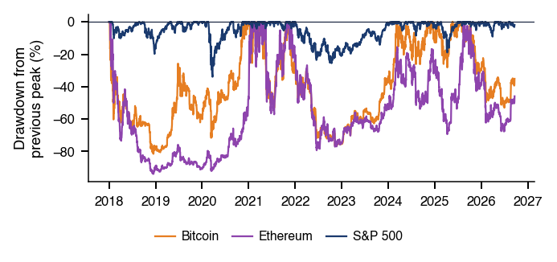
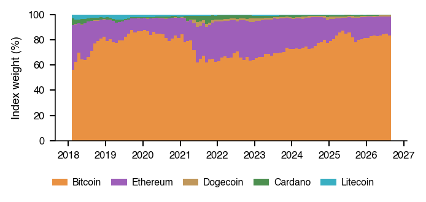
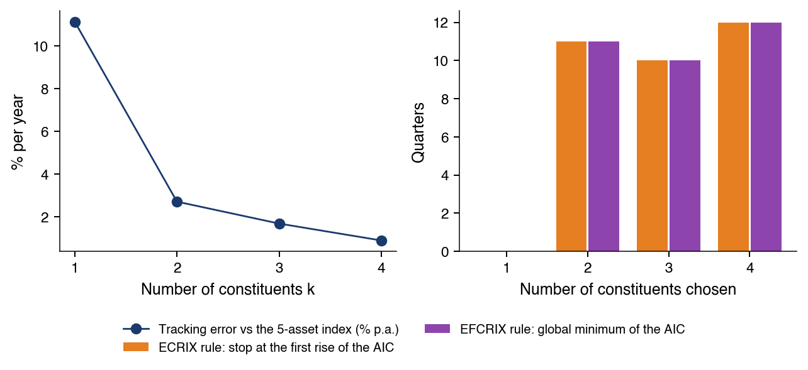
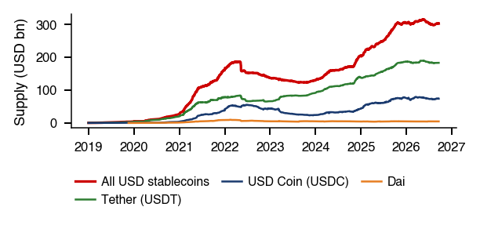
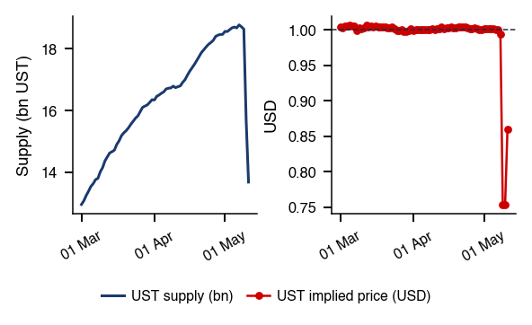
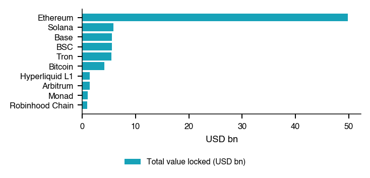
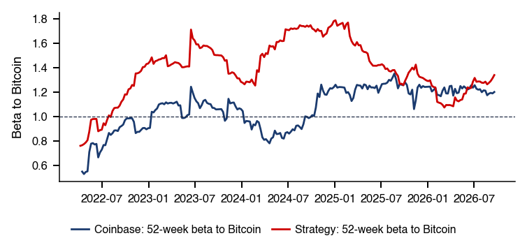
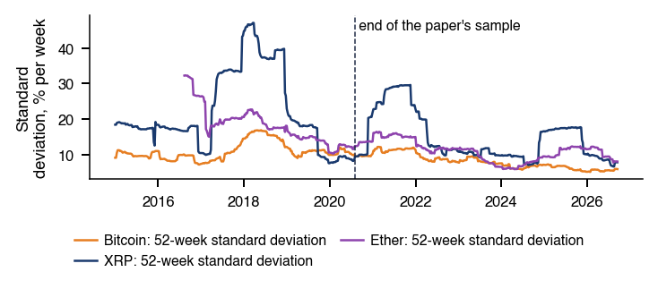

Bucharest University of Economic Studies IDA Institute Digital Assets Blockchain Research Center AI4EFin Artificial Intelligence for Energy Finance Romanian Academy, Institute for Economic Forecasting MSCA Digital Finance
Opening: Which Measurements Must Change for Digital Assets?
“A purely peer-to-peer version of electronic cash would allow online payments to be sent directly from one party to another without going through a financial institution.” — Nakamoto (2008)
Bitcoin started as electronic cash without an intermediary; today it is a financial asset
Bitcoin's market value: 1.63 trillion USD on 18 Sep 2026, i.e. 82.5% of the value of the five large coins
Crypto returns come from a 7-day market, compared with markets that trade 5 days a week
Bitcoin's annualised volatility in 2018–2026: 64%, 3.3 times that of the S&P 500 (19%)
The Bitcoin–equity link changed in 2020, not at the launch of spot ETFs in January 2024
ETF: exchange-traded fund, here one that holds the coin
estimated break date: 9 Mar 2020; sup-Wald statistic 20.12, above the 5% critical value 11.55
correlation of daily Bitcoin and S&P 500 returns: 0.01 before the break, 0.40 after
A stablecoin's 1 USD peg depends on its reserves and on the settlement of redemptions
after Silicon Valley Bank was closed, USD Coin hit a daily low of 0.8774 USD on Saturday, 11 March 2023
A purely peer-to-peer version of electronic cash would allow online payments to be sent directly from one party to another without going through a financial institution.
Nakamoto (2008) proposes a shared ledger of blocks, a blockchain in which each block carries the hash of the previous one, through which payments are made without a financial intermediary. Bitcoin, built on this ledger, is today a financial asset: on 18 September 2026 its market value was 1.63 trillion USD, i.e. 82.5% of the value of the five large coins studied in the chapter. The chapter's question is whether cryptos, stablecoins and decentralised finance (DeFi) pools behave like familiar assets, and which measurements must change.
The first differences concern the calendar and the tails. Cryptos trade seven days a week, and comparisons with shares and gold use the days common to both markets. Bitcoin's annualised volatility in 2018–2026 is 64%, 3.3 times that of the S&P 500 index (19%). Yet the Hill estimates of the left tail index are between 2.67 and 2.87 for all six assets compared, and the data show no significant differences among them: cryptos are more volatile, not necessarily heavier-tailed.
The link between Bitcoin and shares has changed. The correlation of daily returns with the S&P 500 is 0.01 before and 0.40 after a break dated by least squares at 9 March 2020. The sup-Wald test, with an unknown break date, gives 20.12, above the 5% critical value of 11.55, and the 95% confidence interval for the date, 11 February 2019 – 29 December 2021, excludes the launch of spot exchange-traded funds (ETFs) in January 2024. Stablecoins add another risk: after Silicon Valley Bank was closed, USD Coin hit a daily low of 0.8774 USD on Saturday, 11 March 2023, when redemptions could not be settled.
Digital assets are claims recorded on a blockchain rather than in the books of a bank or a central securities depository. The chapter treats them as financial assets and asks which of the tools of the previous chapters carry over unchanged and which must be adapted. Three features set this market apart from the markets studied so far: it trades seven days a week, its value is concentrated in one coin, and part of it, the stablecoins and the decentralised finance (DeFi) pools, is built from contracts whose rules are public. This section introduces the objects, the data and the calendar on which every later statistic is computed.
Digital Assets: What Is Different and How to Measure It
The chapter's question is whether cryptos, stablecoins and DeFi pools behave like familiar assets, and which measurements must change when they do not. The answer is sought in two parts. Part I deals with the crypto market itself: the stylised facts of crypto returns, the construction of a crypto index, CRIX, and stablecoins, the tokens that promise a fixed value of 1 USD. Part II deals with the instruments built on top of this market: DeFi, short for decentralised finance, and its automated market makers; spot exchange-traded funds (ETFs), funds listed on a stock exchange that hold the coin itself; and crypto equities, listed companies whose value depends on Bitcoin.
Part II ends with the question of whether cryptos form an asset class of their own, a case study on common risk factors in cryptocurrency returns, and one pass of the research loop assisted by artificial intelligence (AI). Detailed examples and advanced topics are in Further Topics, after the Conclusions.
The skills the chapter builds are technical. The statistics of a 7-day market must be computed on the right calendar, with confidence intervals for the tail index, the volatility and the correlations. A market-value index requires a divisor, and the peg of a stablecoin can be estimated as a threshold autoregression (threshold AR). The price of a swap in a constant-product pool can be derived in closed form, and providing liquidity to such a pool can be interpreted as selling volatility. Finally, claims about ETF tracking, crypto betas and asset classes must be tested in ways that respect the closing times of different markets and allow for break dates that are not known in advance.
In brief
Digital Assets, Pricing and Liquidity
The question: do cryptos, stablecoins and DeFi pools behave like familiar assets?
which measurements must change?
Part I: the crypto market, stylised facts of returns, crypto indices (CRIX), stablecoins
Part II: DeFi and automated market makers, spot ETFs and crypto equities
DeFi: decentralised finance
spot ETFs: exchange-traded funds that hold the coin
Cryptos as an asset class, a case study, one pass of the research loop assisted by artificial intelligence (AI)
Detailed examples and advanced topics are in Further Topics, after the Conclusions
What you should be able to do
compute the statistics of a 7-day market on the right calendar
with intervals for its tail index, volatility and correlations
compute a market-value index with a divisor
estimate a stablecoin peg as a threshold autoregression (threshold AR)
derive the price of a swap in a constant-product pool and interpret providing liquidity as selling volatility
interpret ETF tracking, crypto betas and asset-class claims
with tests that respect closing times and unknown break dates
Further Topics and Appendix: reading for familiarity
A blockchain, as proposed by Nakamoto (2008), is a shared ledger organised in blocks, each of which carries the hash of the previous block. Because the hash of a block depends on its whole content, altering an old transaction would change every later hash, and the ledger would no longer agree with the copies kept by the other participants. The ledger is secured by a consensus rule that makes rewriting it costly: proof of work in Bitcoin, where new blocks require computational effort, and proof of stake in Ethereum since 15 September 2022, where validators lock coins that they lose if they misbehave.
Bitcoin's supply follows a fixed schedule. New coins are issued with every block, and the issuance per block halves at regular intervals, so that the total supply approaches a cap of 21 million coins. On 18 September 2026, 20.09 million coins existed. The fixed schedule matters for what follows: since the quantity changes slowly and predictably, almost all variation in Bitcoin's market value comes from its price.
The chapter distinguishes coins from tokens. Coins are the native assets of a blockchain, such as bitcoin on the Bitcoin chain or ether on Ethereum. Tokens are issued by smart contracts, programs stored on a blockchain that execute automatically (Buterin, 2014); stablecoins, governance tokens and tokenised funds are tokens. DeFi is built from such contracts (Schär, 2021). Surveys of the technology and its governance are Böhme, Christin, Edelman & Moore (2015) and Lin, Pele & Ren (2025), and a survey of the economics is Härdle, Harvey & Reule (2020).
The data combine six groups of series. Crypto prices cover Bitcoin, Ethereum, Solana, Dogecoin, Cardano and Litecoin, daily and seven days a week, from 2018 to 2026. The stablecoin series contain the prices of Tether (USDT), USD Coin (USDC) and Dai (DAI) and the supply of each coin, from 2019. The daily number of coins in circulation is available from 2018 and the total value locked in DeFi, for all chains and by chain, from 2020. The traditional-market series are the spot ETFs on Bitcoin (IBIT) and Ether (ETHA), the shares of Coinbase and Strategy, the S&P 500, the Nasdaq 100 (through the ETF QQQ) and gold (XAU/USD, in USD per ounce). A wider universe of 26 assets, covering cryptos, equity indices, currencies, commodities and bonds, from 2019 to 2026, is used for the asset-class question.
All series are daily closes up to 18 September 2026. The main difficulty is the calendar. Crypto trades every day, while shares and gold trade on business days only. Each statistic of a single asset is computed on its own calendar, so Bitcoin's volatility uses all seven days of the week. Any analysis that combines assets uses their common days: prices are first aligned on the common trading days and only then are returns computed, so that a return on a Monday measures the same interval for both assets. Computing the returns first and aligning them afterwards would pair a crypto return over one day with an equity return over three.
Some tests use longer histories and additional series; they are described in Further Topics.
In brief
Series
Content
Period
Crypto prices
Bitcoin, Ethereum, Solana, Dogecoin, Cardano, Litecoin; daily, 7 days a week
2018–2026
Stablecoins
Tether (USDT), USD Coin (USDC), Dai (DAI) prices; supply by coin (DefiLlama)
The market value of coin \(i\) at the end of month \(t\) is the price times the quantity in circulation,
\[M_{i,t} = P_{i,t} \times Q_{i,t},\]
(16.1)
where \(P_{i,t}\) is the price in USD and \(Q_{i,t}\) the number of coins in circulation. In (16.1) only the price moves quickly: the supply of the large coins changes slowly, so the market value of the market follows its prices. The share of coin \(i\) is \(M_{i,t}/\sum_j M_{j,t}\).
On 18 September 2026 Bitcoin's market value was 1.63 trillion USD. The five coins together were worth 1,970 billion USD, against a peak of 3,135 billion on 6 October 2025. The chart shows the market values at month ends; the slider selects the month and the ▶ button runs through the sample.
Question for the room Bitcoin accounts for 82.5% of the five coins' market value. If only Bitcoin's price doubles and quantities remain unchanged, what is its new share?
Answer
About 90.4%: 2 × 0.825 / (2 × 0.825 + 0.175) = 0.904. Constant quantities do not imply constant value weights. The 91.25% option adds half of the other coins' share instead of recalculating total market value. In the data, the Bitcoin share ranged between 55.8% (1 Feb 2018) and 88.5% (5 Sep 2019); on 18 September 2026 Ethereum holds 16.2%, and the five coins are worth 1,970 billion USD.
Bitcoin's share of the five coins is 82.5% today. Over the sample it ranged from 55.8%, on 1 February 2018, to 88.5%, on 5 September 2019. Because shares are ratios of values, a change in one price moves all shares: with fixed quantities, a rise in Bitcoin's price alone raises its share and lowers the shares of all other coins. The concentration has a practical consequence for the rest of the chapter: a market-value index of these coins is mostly an index of Bitcoin, and the comparison of weighting rules in the CRIX section is largely a comparison between Bitcoin and the other coins.
In brief
Market value of coin \(i\) at month end \(t\): \(M_{i,t} = P_{i,t} \times Q_{i,t}\)
\(P_{i,t}\): the price in USD
\(Q_{i,t}\): the coins in circulation
Bitcoin: 1.63 trillion USD on 18 Sep 2026
The five coins: 1 970 billion USD today, peak 3 135 billion (6 Oct 2025)
the value moves with prices, supply changes slowly
Bitcoin's share: 82.5% today, between 55.8% (1 Feb 2018) and 88.5% (5 Sep 2019)
Cryptos are coins and tokens recorded on blockchains; their supply is set by protocol rules or by smart contracts. The data mix a 7-day market with 5-day markets, so each statistic is computed on its own calendar and each comparison on common days. By value, the market is dominated by Bitcoin. The next section measures how crypto returns differ from those of shares and gold.
Stylised Facts of Crypto Returns
Chapter 1 established the stylised facts of equity returns: heavy tails, volatility clustering and deep drawdowns. This section asks whether crypto returns share these facts on a different scale, or whether they differ in kind. The distinction matters for risk measurement. Value at risk (VaR), expected shortfall (ES) and every confidence interval depend on how heavy the tail is, and a sample moment that does not exist in the population estimates nothing. The section therefore measures the tail by its index rather than by the kurtosis, and then turns from the distribution of each asset to the link between Bitcoin and the stock market, which changed in 2020.
The question is whether crypto returns share the stylised facts of equities, namely heavy tails, volatility clustering and deep drawdowns, on a different scale. The answer matters because value at risk (VaR) and expected shortfall (ES), as well as every confidence interval built from sample moments, depend on the weight of the tail. If the fourth moment of the returns is infinite, the sample kurtosis converges to no parameter, and the right summary of the tail is its tail index.
Two comparison assets are used. The S&P 500 is the reference risk asset. Gold is included because Bitcoin is often described as "digital gold", a claim that can be checked against gold's own statistics. All assets share one window, 2018–2026, which contains the March 2020 crash, the 2022 crypto winter and the launch of spot ETFs in January 2024. The calendar follows the rule of the previous section: each asset's statistics are computed on its own calendar, 7 days for crypto and 5 for shares, and pairs of assets on their common days.
In brief
The question: do crypto returns share the stylised facts of equities, on a different scale?
heavy tails, volatility clustering, deep drawdowns
Why it matters: VaR, ES and every confidence interval depend on how heavy the tail is
VaR: value at risk; ES: expected shortfall
If the fourth moment is infinite, the sample kurtosis estimates no parameter: we need the tail index
Comparison assets
the S&P 500, the reference risk asset
gold, the asset Bitcoin is compared with as “digital gold”
Sample 2018–2026: one window for all assets
with the March 2020 crash, the 2022 crypto winter and the spot ETF launch
Calendar: each asset's statistics on its own calendar
7 days for crypto, 5 for shares
pairs of assets on common days
The Measures: Return, Volatility, Skewness, Drawdown, Clustering
Let \(P_t\) be the close on day \(t\). The daily log return in per cent is \(r_t = 100\,(\ln P_t - \ln P_{t-1})\), computed on each series' own calendar. The annualised volatility is \(\sigma_a = s\sqrt{A}\), where \(s\) is the sample standard deviation of \(r_t\) and \(A\) the number of return periods per year, about 365 for crypto and 252 for shares. The choice of \(A\) follows the calendar: a crypto series observed every day accumulates variance over 365 days a year.
The skewness, \(S = \overline{(r - \bar r)^3}/s^3\), with a bar denoting the sample mean, measures the asymmetry of the distribution; \(S < 0\) indicates a longer left tail. The maximum drawdown,
is the deepest fall from a running peak; it lies between \(-100\%\) and 0 and describes the worst loss of an investor who bought at the top.
Volatility clustering is measured by \(\hat\rho_1(|r|)\), the sample autocorrelation of the absolute returns \(|r_t|\) at lag 1. Returns themselves are nearly uncorrelated, but a positive autocorrelation of their absolute values means that large moves tend to follow large moves, the property modelled by the GARCH family in Chapter 1 and later chapters.
VaR at 1% is the loss exceeded on 1% of the days; ES at 2.5% is the average loss over the worst 2.5% of the days. Both are reported as positive numbers, losses of the daily log return. The historical ES in (16.2) integrates the empirical quantile function, which is a step function; when \(0.025\,n\) is not an integer, the boundary observation enters with a fractional weight. The definitions and their estimation are covered in Chapter 7.
The two levels follow regulatory practice: the Basel market-risk rules replaced VaR at 1% by ES at 2.5%. Under the Normal distribution the two measures are close, \(2.326\sigma\) for VaR 1% and \(2.338\sigma\) for ES 2.5%; they differ when the tail is heavy, because ES averages the losses beyond the quantile. The inequality \(\mathrm{ES}_p \ge \mathrm{VaR}_p\) holds at the same level \(p\), not across the two levels used here.
In brief
Historical daily \(\VaR_{1\%} = -q_{1\%}(r)\) and \(\ES_{2.5\%} = -\frac{1}{0.025}\int_0^{0.025} q_u(r)\,du\)
\(q_p(r)\): empirical \(p\)-quantile of the returns
historical ES: the integral of the empirical quantile function, with a fractional weight on the boundary observation
Why two levels: the Basel market-risk rules replaced VaR at 1% by ES at 2.5% (Basel Committee, MAR33, para. 33.3); under the Normal distribution both are close, \(2.326\sigma\) and \(2.338\sigma\); \(\ES_p \ge \VaR_p\) holds at the same \(p\), not across levels
Let \(L = -r\) be the daily loss. A power-law tail means that, for large \(x\),
\[P(L > x) \sim C x^{-\alpha},\]
where \(C > 0\) is a scale constant and \(\alpha\) is the tail index. A smaller \(\alpha\) means a heavier tail, and the moment \(E|r|^q\) is finite only for \(q < \alpha\). With \(\alpha\) between 2 and 4, the variance exists but the fourth moment does not, and the sample kurtosis has no finite population counterpart.
The Hill estimator (Hill, 1975) uses the \(k\) largest losses. Let \(L_{(1)} \ge L_{(2)} \ge \dots\) be the losses sorted from the largest. Then
where \(L_{(k+1)}\) plays the role of a threshold. In the chapter \(k\) is 5% of the losses. Large ratios \(L_{(j)}/L_{(k+1)}\) on average, that is, extreme losses far above the threshold, give a small \(\hat\alpha_H\) and a heavy tail.
For independent and identically distributed (i.i.d.) data, the standard error (SE) of (16.3) is \(\mathrm{SE} = \hat\alpha_H/\sqrt{k}\), and the 95% confidence interval (CI) is \(\hat\alpha_H \pm 1.96\,\mathrm{SE}\). Two caveats apply. The choice of \(k\) trades bias against variance, and returns with volatility clustering are not i.i.d. The conditions of the inference and the effect of dependence are discussed in the Appendix.
In brief
Power-law tail of the daily loss \(L = -r\): \(P(L > x) \sim C x^{-\alpha}\) for large \(x\)
\(C > 0\): a scale constant
\(\alpha\): the tail index; smaller \(\alpha\) = heavier tail; the moment \(E|r|^q\) is finite only for \(q < \alpha\)
Hill estimator Hill (1975) from the \(k\) largest losses: \(\hat\alpha_H = \bigl(\frac{1}{k}\sum_{j=1}^{k} \ln (L_{(j)}/L_{(k+1)})\bigr)^{-1}\)
\(L_{(1)} \ge L_{(2)} \ge \dots\): the losses sorted from the largest; \(k\) = 5% of the losses; \(L_{(k+1)}\) acts as the threshold
Large ratios \(L_{(j)}/L_{(k+1)}\) on average give a small \(\hat\alpha_H\): a heavy tail
Standard error (SE) \(\mathrm{SE} = \hat\alpha_H/\sqrt{k}\) for independent and identically distributed (i.i.d.) data; 95% confidence interval (CI) \(\hat\alpha_H \pm 1.96\,\mathrm{SE}\) (conditions and dependence in the Appendix)
The table applies the measures of the previous frames to four cryptos, the S&P 500 and gold, with daily log returns in per cent from 2018 to 2026; Solana starts in April 2020. The volatility differences are large. Bitcoin's annualised volatility is 64%, 3.3 times that of the S&P 500 (19%); Ethereum's is 84%, Solana's 117% and Dogecoin's 124%. Gold, at 17%, is close to the S&P 500. The maximum drawdowns follow the same order: from −82% for Bitcoin to −96% for Solana, against −34% for the S&P 500 and −28% for gold.
The risk measures confirm the scale difference. Bitcoin's daily VaR 1% is 10.2% in log terms, which corresponds to a loss of 9.7% of the position, since \(e^{-0.102} - 1 \approx -0.097\). The corresponding figures for the S&P 500 and gold are 3.4% and 3.0%. Skewness is negative for all assets except Dogecoin, whose value of 4.88 reflects a few very large positive days. Volatility clustering, measured by \(\hat\rho_1(|r|)\), is present everywhere, from 0.13 for gold to 0.37 for Dogecoin.
The tail indices tell a different story. The Hill estimates lie between 2.67 (Ethereum) and 2.87 (S&P 500) for all six assets, and their 95% confidence intervals overlap widely. Crypto is more volatile, but the data give no strong evidence that its tails are heavier in the sense of the tail index: once returns are scaled, extreme crypto days are about as frequent as extreme equity days. The tests of differences between tail indices are in the Appendix.
In brief
\(n\)
\(\sigma_a\) (%)
\(S\)
MDD (%)
\(\hat\rho_1(|r|)\)
\(\hat\alpha_H\)
95% CI
\(\VaR_{1\%}\)
\(\ES_{2.5\%}\)
Bitcoin
3 182
\(64\)
\(-0.95\)
\(-82\)
\(0.17\)
\(2.73\)
\([2.12, 3.33]\)
\(10.2\)
\(10.3\)
Ethereum
3 182
\(84\)
\(-0.82\)
\(-94\)
\(0.16\)
\(2.67\)
\([2.08, 3.26]\)
\(13.5\)
\(13.7\)
Solana
2 351
\(117\)
\(-0.22\)
\(-96\)
\(0.28\)
\(2.85\)
\([2.12, 3.58]\)
\(14.5\)
\(17.2\)
Dogecoin
3 182
\(124\)
\(4.88\)
\(-92\)
\(0.37\)
\(2.83\)
\([2.22, 3.45]\)
\(13.8\)
\(16.4\)
S&P 500
2 189
\(19\)
\(-0.65\)
\(-34\)
\(0.36\)
\(2.87\)
\([2.07, 3.67]\)
\(3.4\)
\(3.8\)
Gold
2 269
\(17\)
\(-0.55\)
\(-28\)
\(0.13\)
\(2.75\)
\([1.99, 3.51]\)
\(3.0\)
\(3.2\)
Daily log returns in %, Solana from April 2020; VaR and ES are losses of the daily log return
Bitcoin: 3.3 times the S&P 500's volatility
daily VaR 1% 10.2% in log terms, a loss of 9.7% of the position
Hill indices 2.67–2.87 for all six assets
crypto is more volatile, but the data give no strong evidence of different tail indices
The upper limits of all six i.i.d. confidence intervals lie below 3.7. A tail index below 4, and hence an infinite fourth moment \(E|r|^4 = \infty\), is therefore plausible for every asset. It is not proven: the intervals assume i.i.d. data, and the dependence documented by \(\hat\rho_1(|r|)\) widens them.
The consequence concerns the kurtosis. If \(\alpha < 4\), the sample excess kurtosis
\[K = \frac{\overline{(r - \bar r)^4}}{s^4} - 3\]
estimates no finite parameter: it grows with the sample size and is dominated by the largest observation. A table of kurtoses would therefore compare numbers that depend mostly on the length of the sample. The tail is summarised instead by \(\hat\alpha_H\) with its confidence interval. The result supports a description of the data, not a causal statement.
In brief
All six i.i.d. 95% CIs lie below 3.7: \(\alpha < 4\), hence \(E|r|^4 = \infty\), is plausible but not proven
If \(\alpha < 4\), the sample excess kurtosis estimates no finite parameter
The table reports one volatility per asset over the whole sample. The chart shows how volatility changed: it plots the annualised standard deviation of daily log returns over a moving window, one year by default, for Bitcoin, Ethereum, the S&P 500 and gold. Each point uses the past window of data on the asset's own calendar; the slider changes the window length, in calendar days.
Question for the room On 18 September 2026, using the 365-day window, the ratio of annualised Bitcoin to S&P 500 volatility is about 3.5. What is the ratio of their annualised variances?
Answer
About 12.2. Variance is squared volatility: (45.1% / 12.9%)² ≈ 3.5² ≈ 12.2. The 3.5 option confuses variance with standard deviation; 1.9 takes another square root. Annualised Bitcoin volatility fell from its post-2019 maximum of 88% to 45%, and Ethereum volatility from 109% to 64%. The decline is consistent with a maturing market, but the chart does not identify a cause.
Bitcoin's one-year volatility fell from 88% to 45% today, and Ethereum's from 109% to 64%. The decline is consistent with a maturing market, but the chart does not identify the cause: a calmer macroeconomic period would produce the same picture. Bitcoin remains 3.5 times as volatile as the S&P 500, whose one-year volatility is 13%. Gold moved the other way: its volatility reached 30% in 2026, a record for the sample. Drawdowns, their depth and their duration, are analysed in Further Topics.
In brief
Annualised standard deviation of daily log returns over a moving one-year window
Bitcoin fell from 88% to 45% today, Ethereum from 109% to 64%
consistent with a maturing market, but the chart does not identify the cause
Bitcoin is still 3.5 times as volatile as the S&P 500 (13%); gold reached 30% in 2026, a record for the sample
Crypto trades on Saturdays and Sundays, but the main sources of information do not: macroeconomic news is released on business days, US equities are closed at weekends and ETF flows settle only on business days. Whether this makes weekends calmer is an empirical question. The chart shows the root mean squared daily Bitcoin return by day of the week, before and after a split date, set by default at the launch of spot ETFs on 11 January 2024; the slider moves the split date.
Question for the room After 11 January 2024, the ratio of Bitcoin's weekend return variance to its weekday return variance is 0.39. What is the ratio of standard deviations?
Answer
About 0.62: √0.39 ≈ 0.62. The 0.39 option retains the variance ratio; 1.60 reverses the comparison. Before 11 January 2024, the variance ratio is 0.45. The chart displays the root mean squared return by weekday, a distinct measure: on weekdays it falls from 4.01% to 2.73%. At weekends the US stock market is closed and there are no ETF flows; the before/after difference does not establish a causal ETF effect.
Weekends are markedly calmer. The ratio of weekend to weekday variance is 0.45 before 11 January 2024 and 0.39 after. All days became calmer after the ETF launch: the weekday root mean square fell from 4.01% to 2.73%. The before–after comparison does not establish that the ETFs caused the change.
Two practical rules follow. Annualisation should use 365 days, because the weekend contributes variance. But the days are not identical: a model that treats all seven days as having the same variance overstates weekend risk and understates weekday risk. Whether the ratio changed significantly is tested in Seminar 16, B1.
In brief
Root mean squared daily Bitcoin return by day of the week
weekend variance / weekday variance: 0.45 before and 0.39 after 11 January 2024
Bitcoin trades on Saturdays, but macro news, US equity trading and ETF flows do not
all days calmer after the ETF launch (weekday root mean square 4.01% \(\to\) 2.73%)
Annualise with 365 days, but do not treat all days as identical
Bitcoin was long presented as an asset unrelated to the stock market, and hence as a diversifier. The chart tests this description over time: it shows the correlation of Bitcoin's daily log returns with the S&P 500, the Nasdaq 100 and gold, over a moving window of 250 common days; the slider changes the window length. Spot ETFs were launched in January 2024.
Question for the room Bitcoin–S&P 500 correlation is 0.02 in 2017–2019, 0.39 in 2020–2023 and 0.38 after the spot ETF launch. What does this comparison support?
Answer
The increase predates the launch, and the comparison establishes timing, not a mechanism. In the separate regression of Bitcoin on S&P 500 returns, the sup-Wald test rejects no break in the coefficients (sup W = 20.12), and the date that minimises SSR is 9 March 2020. With gold, the correlation rises from −0.02 to 0.12 and then to 0.22.
The correlation with the two equity indices was close to zero until early 2020 and has since been clearly positive, while the correlation with gold stays lower. The rise in the equity correlation precedes the ETF launch by four years, so a comparison before and after January 2024 cannot attribute it to the ETFs. The next frame quantifies these correlations by period.
Over whole periods, the correlation between Bitcoin and the S&P 500 is 0.02 in 2017–2019 (\(n = 754\) common days), 0.39 in 2020–2023 (\(n = 1{,}006\)) and 0.38 since the ETF launch (\(n = 674\)). The Nasdaq 100 behaves like the S&P 500, with 0.38 in the last period. The correlation with gold rises from −0.02 to 0.12 and then to 0.22.
For a portfolio, the change means that Bitcoin offers a smaller diversification benefit than before 2020 (Bouri et al., 2017; Liu & Tsyvinski, 2021). The chart points to a change in early 2020, not in January 2024. Whether the change is a structural break, and when it occurred, is a question for a formal test with an unknown break date, which the next frames develop.
In brief
Chart: correlation of daily log returns over a moving window of 250 common days
where \(r_f\) is the risk-free rate, \(r_m\) the market return, here the S&P 500, and \(r_i\) Bitcoin's return. The chapter uses beta descriptively, as a measure of co-movement; it does not test the CAPM's pricing restriction.
Beta and correlation answer different questions. From (16.4),\(\beta = \rho\,\sigma_{\mathrm{BTC}}/\sigma_{\mathrm{SPX}}\). The correlation \(\rho\) says how tight the link is; beta says how much Bitcoin moves, on average, per 1% move of the S&P 500, which is the hedge ratio. On the common days of 2016–2026, \(\rho = 0.26\) and \(\sigma_{\mathrm{BTC}}/\sigma_{\mathrm{SPX}} = 3.7\) give \(\beta = 0.95\): a weak correlation combined with a high relative volatility produces a beta close to one.
Beta is estimated by ordinary least squares (OLS) as the slope \(\hat b\) of
\[r^{\mathrm{BTC}}_t = a + b\, r^{\mathrm{SPX}}_t + u_t,\]
(16.5)
with daily log returns in per cent on common days. Its standard error requires care, because the residuals display volatility clustering; the heteroskedasticity and autocorrelation consistent (HAC) errors are discussed in Further Topics.
Regression (16.5) is estimated on 2,693 common days since January 2016, with the coefficients \((a, b)\) allowed to shift at an unknown date \(\tau\): one pair applies before \(\tau\) and another after. For a given \(\tau\), let \(W(\tau)\) be the Wald statistic of the null hypothesis \(H_0\) that the coefficients are the same before and after \(\tau\). The covariances in each regime are estimated by the method of Newey & West (1987) with 8 lags.
If the date were known, \(W(\tau)\) would have a \(\chi^2_2\) distribution under \(H_0\). It is not known, and the test of Andrews (1993) uses the largest statistic over the central 70% of the \(T\) days:
\[\sup W = \sup_{\tau \in [0.15T,\ 0.85T]} W(\tau).\]
(16.6)
Under \(H_0\),\(\sup W\) is not \(\chi^2_2\), because \(\tau\) is chosen precisely to make \(W\) large; using \(\chi^2_2\) critical values would reject far too often. The 5% critical value, 11.55, is simulated from the limit distribution of (16.6), which is derived in the Appendix. The trimming to the central 70% keeps enough observations in each regime for the coefficients to be estimated.
Several breaks at unknown dates are handled by the sequential tests and confidence intervals of Bai & Perron (1998). Given one break, the test of a second break gives \(\sup F(2\mid 1) = 10.33\), with \(p = 0.16\), so no further break is detected at 5%.
In brief
The beta regression on 2 693 common days since January 2016
\((a, b)\) allowed to shift at an unknown date \(\tau\): one pair before \(\tau\), another after
\(W(\tau)\): the Wald statistic of \(H_0\) (the same \((a, b)\) before and after \(\tau\))
with Newey–West covariances (8 lags) in each regime
\(\sup\)-Wald Andrews (1993): \(\sup_{\tau \in [0.15T, 0.85T]} W(\tau)\), the largest \(W\) over the central 70% of the \(T\) days
Under \(H_0\) the \(\sup\) is not \(\chi^2_2\), because \(\tau\) is chosen to make \(W\) large
5% critical value 11.55, simulated from the limit distribution (Appendix)
Several breaks at unknown dates: the sequential tests and CIs of Bai & Perron (1998)
the test of a second break, \(\sup F(2\mid 1) = 10.33\), \(p = 0.16\): no further break detected at 5%
Did the Bitcoin–Equity Link Break in 2020? (2/2): the Result
The test statistic is \(\sup W = 20.12\), above the 5% critical value of 11.55; its \(p\)-value, from 20,000 simulations of the limit distribution, is 0.0008. The hypothesis of no break is rejected. The inference relies on the Newey–West covariances, which require finite moments of the score \(x_t u_t\) and weak dependence; the heavy tails of Chapter 1 put these conditions in question. A detail of the statistic needs attention. The maximum of \(W(\tau)\) is reached on 14 August 2017, two trading days from the edge of the admissible range and far from the estimated break date. The rejection does not rest on that point: at the estimated date, \(W = 18.81\), above the 1% critical value of 15.18.
The break date is estimated by least squares, as the \(\tau\) that minimises the sum of squared residuals (SSR) of the two regimes; it is 9 March 2020. The 95% confidence interval of Bai (1997) runs from 11 February 2019 to 29 December 2021 and excludes January 2024. The interval is asymmetric because the two regimes differ: the variance of the S&P 500 rises from 0.75 to 1.61, which makes the slope more precisely estimated after the break, and the residual variance falls from 20.9 to 12.5. At the date of the ETF launch, \(W = 2.31\).
At the estimated date, the correlation is 0.01 before and 0.40 after. The difference, 0.39, has a 95% block-bootstrap confidence interval of [0.24, 0.46]. Part of the rise reflects higher volatility: after the adjustment of Forbes & Rigobon (2002), presented in Further Topics, the 2020–2023 correlation falls from 0.39 to 0.23, but the rise stays positive.
The result supports a description. The one-break model dates a change in the coefficients \((a, b)\); it does not identify a mechanism. It also does not date a break in the correlation directly: since \(\rho = b\,\sigma_{\mathrm{SPX}}/\sigma_{\mathrm{BTC}}\), the correlation depends on the variances as well as on the slope.
In brief
\(\sup W = 20.12\): above the 5% critical value 11.55
\(p = 0.0008\), from 20 000 simulations of the limit distribution
so the no-break hypothesis is rejected
Newey–West covariances require finite moments of the score \(x_tu_t\) and weak dependence, conditions the tails of Chapter 1 question
The maximum is reached on 14 Aug 2017, two trading days from the edge of the admissible range, far from the estimated break date
The rejection does not rest on that point: at the estimated date \(W = 18.81\), above the 1% critical value 15.18
Least-squares break date: 9 Mar 2020
the \(\tau\) that minimises the sum of squared residuals (SSR) of the two regimes
95% CI Bai (1997): 11 Feb 2019 – 29 Dec 2021, an interval that excludes January 2024
the interval is asymmetric: the S&P 500 variance rises from 0.75 to 1.61, the residual variance falls from 20.9 to 12.5
At the ETF launch \(W = 2.31\)
Correlation: \(0.01\) before, \(0.40\) after
difference 0.39, 95% CI \([0.24, 0.46]\) (block bootstrap, at the estimated date)
adjusted for volatility (Forbes–Rigobon, in Further Topics), the 2020–2023 correlation falls from 0.39 to 0.23, but the rise stays positive
What the result supports: description
the one-break model dates the change in the coefficients \((a, b)\); it does not identify a mechanism
\(\rho = b\,\sigma_{\mathrm{SPX}}/\sigma_{\mathrm{BTC}}\) also depends on the variances: a break in \((a, b)\) is not a break in the correlation
Regression (16.5) is re-estimated in each regime, with Newey–West standard errors: 1,051 common days before 9 March 2020 and 1,642 after. Before the break, \(\hat b = 0.07\) with a HAC SE of 0.22 (OLS SE 0.16), so \(t = 0.3\) and the beta is not significantly different from zero. After the break, \(\hat b = 1.22\) with a HAC SE of 0.14 (OLS SE 0.07), so \(t = 8.6\).
The HAC standard errors are 1.4 times the OLS ones before the break and 2.1 times after. OLS intervals would therefore be far too narrow, because the residuals inherit the volatility clustering of the returns. HAC errors correct for dependence and heteroskedasticity but still require finite moments of the score \(x_t u_t\), a condition the tails of Chapter 1 put in question.
Since the ETF launch (674 days), \(\hat b = 1.20\) with a HAC SE of 0.20; in 2020–2023, \(\hat b = 1.15\) with a HAC SE of 0.17. The two estimates are close, so the launch shows no change in beta. The volatility adjustment of the correlations is in Further Topics.
In brief
The same regression in each regime, Newey–West SE: 1 051 common days before 9 Mar 2020, 1 642 after
Before: \(\hat b = 0.07\), HAC SE \(0.22\) (OLS SE \(0.16\)): \(t = 0.3\), beta not significantly different from 0
After: \(\hat b = 1.22\), HAC SE \(0.14\) (OLS SE \(0.07\)): \(t = 8.6\)
HAC SE are 1.4 times (before) and 2.1 times (after) the OLS SE: OLS intervals would be far too narrow
HAC SE handle dependence, but require finite moments of the score \(x_tu_t\), a condition the tails of Chapter 1 question
Since the ETFs (674 days): \(\hat b = 1.20\), HAC SE \(0.20\)
Crypto returns share the stylised facts of equities on a larger scale: Bitcoin's volatility is 3.3 times that of the S&P 500 and that of the other coins higher still, drawdowns are deeper, and volatility clustering is present; but the Hill tail indices, between 2.67 and 2.87, are statistically indistinguishable from those of the S&P 500 and gold. Weekends are calmer than weekdays. The link with equities broke in early 2020, with a beta near zero before and above one after, and the spot ETF launch shows no further change. The next section builds an index for this market.
Crypto Indices: CRIX
A market return requires an index. For equities the choice is settled by convention, but the crypto market has thousands of coins, one of which dominates, and the set of relevant coins changes quickly. This section presents CRIX, a market-value weighted index whose number of constituents is chosen from the data, and compares it with equal weights on the five coins of the chapter.
The question is how to build a benchmark for a market with many coins dominated by one. The answer matters for the rest of the chapter: the crypto market return used in the Gibbons–Ross–Shanken (GRS) test of Section 7 and in the case study is the return of such an index.
Four choices define the index. Market-value weights make it replicable: an investor can hold the coins in the proportions in which the market holds them, without trading except at reallocations. A divisor keeps the level continuous when the members or their quantities change. The number of constituents is chosen from the data by the CRIX rule rather than fixed in advance. The main threat to the comparison is survivorship bias, which arises when the universe of coins is chosen ex post among those that still exist.
In brief
The question: how do we build a benchmark for a market with many coins, dominated by one?
Why it matters: the crypto market return is the return of such an index
where \(k\) is the number of constituents, \(P_{i,t}\) the price of coin \(i\) on day \(t\),\(Q_{i,\tau}\) its coins in circulation, fixed within the period, and \(D_\tau\) the divisor.
Because the quantities are fixed within the period, the index return between two days of the same period is a weighted average of the constituents' returns, with weights equal to their value shares at the start of the period. The index is therefore of the Laspeyres type, with quantities fixed and prices variable.
At a reallocation on day \(t\), the quantities and possibly the members change. If the divisor stayed the same, the level would jump for reasons unrelated to prices. The divisor is therefore reset so that the level on day \(t\) is the same under the old and the new composition:
Level on day \(t\) of reallocation period \(\tau\): \(I_t = \sum_{i=1}^{k} P_{i,t}\, Q_{i,\tau} / D_\tau\)
\(k\): number of constituents; \(P_{i,t}\): price of coin \(i\) on day \(t\); \(Q_{i,\tau}\): its coins in circulation, fixed within the period; \(D_\tau\): the divisor
Index return = weighted average of the constituents' returns, weights = value shares at the start of the period; a Laspeyres-type index (quantities fixed within the period)
At a reallocation on day \(t\) the divisor is reset so that the level does not jump
The CRIX rule of Trimborn & Härdle (2018) chooses \(k\) by asking how well a candidate index tracks the total market index (TMI), which contains all coins. The candidate CRIX\((k, \beta)\) contains the \(k_1\) largest coins with weight 1, and the next \(s = k - k_1\) coins with free weights \(\beta = (\beta_1, \dots, \beta_s)\) fitted to the data. The tracking residual is the daily gap between the two index log returns,
where \(L\) is the likelihood of the residuals and \(2s\) a penalty for the free weights. The rule picks the \(k\) with the smallest AIC: an extra coin enters only if it improves the tracking by more than the penalty.
In the published rule, \(k\) is reviewed quarterly on the last three months of data, and the members are reallocated monthly by market value. Two stopping rules exist: ECRIX stops at the first rise of the AIC, and EFCRIX takes its global minimum. The likelihood is detailed in the Appendix. In the chapter's data, TMI holds only the five coins with public supply, so \(k \le 4\).
In brief
Candidate index CRIX\((k, \beta)\), fitted to track the total market index TMI (all coins) Trimborn & Härdle (2018)
the \(k_1\) largest coins enter with weight 1
the next \(s = k - k_1\) with free weights \(\beta = (\beta_1, \dots, \beta_s)\), fitted to the data
Tracking residual: \(\hat\varepsilon_t(k, \beta) = \Delta\ln \mathrm{TMI}_t - \Delta\ln \mathrm{CRIX}_t(k, \beta)\), the daily gap between the two index log returns
The chart compares, from 2018, the total-market index of the five coins, which is value-weighted, an equal-weighted index of the same coins and Bitcoin alone. The vertical axis is logarithmic, so equal vertical distances correspond to equal percentage changes; the slider moves the start of the period over which the growth rates are computed.
Question for the room The equally weighted index has a CAGR of 30.0%, versus 21.4% for market-cap weighting. Is this sufficient to recommend equal weights for a new period?
Answer
No. The difference is concentrated in 2021, when the equally weighted index rose by 998% and the cap-weighted index by 113%. Volatilities are 82.5% and 65.7%; CAGR is not a risk-adjusted measure. The five coins are chosen ex post among today's survivors: a shared universe does not remove the selection problem (survivorship bias).
The total-market index returned 21.4% a year over 8.6 years, with a volatility of 65.7%. Bitcoin alone did better, because the other coins lost weight and value relative to it. The equal-weighted index returned 30.0% a year at a volatility of 82.5%. The higher figure is driven by 2021, when the equal-weighted index rose 998% and the value-weighted index 113%: a few extreme months, not a stable premium. The compound annual growth rate (CAGR) is not a risk-adjusted measure, and the comparison concerns one realised path.
The comparison has a further weakness. The five coins are chosen ex post, among today's survivors. Coins that were large in 2018 and later collapsed are absent, so the returns of every index built on the five survivors are biased upwards. This survivorship bias is analysed in Further Topics, following Będowska-Sójka, Wójcik & Pele (2026), together with the evolution of the index weights.
The result supports a description: an ex post comparison on five survivors. It is not evidence that one weighting rule is better than the other. Such evidence would require a universe defined in real time, with coins entering and leaving the index as they did in the market.
In brief
Log scale; total-market index 21.4% a year over 8.6 years, volatility 65.7%
Bitcoin alone did better: the other coins lost weight and value
Equal weights: 30.0% a year at 82.5% volatility
driven by 2021, when the equal-weighted index rose 998% and the value-weighted index 113%
a few extreme months, not a stable premium
The five coins are chosen ex post, among today's survivors
A crypto index is a market-value weighted Laspeyres index whose divisor keeps the level continuous at reallocations; the CRIX rule chooses the number of constituents by the AIC. On the five coins of the chapter, the market index returned 21.4% a year and equal weights 30.0%, but the gap comes from 2021 and the universe is biased by survivorship. The next section turns to stablecoins, the tokens designed not to move at all.
Stablecoins
A stablecoin is a token designed to trade at a fixed price, usually 1 USD. Stablecoins are the cash leg of the crypto market. A peg is a promise, and the questions of this section are how tightly the promise is kept, by which mechanism, and what happens when the mechanism stops. The answer takes the form of a threshold autoregression, a model in which the speed of return to the peg depends on the size of the deviation.
The question is how tightly stablecoins hold their 1 USD peg and which mechanism holds it. The stakes are large: stablecoins were worth 303 billion USD on 18 September 2026, and a peg can be lost over one weekend.
The section studies three coins with daily prices over the whole sample. Tether and USD Coin are the largest fiat-backed stablecoins; Dai is backed by crypto assets. Sky Dollar, larger than Dai today, exists only since 2024 and is therefore excluded. The sample runs from 2021 to 2026, because earlier quotes are thin and noisy.
The model is a threshold AR rather than a linear AR(1). Arbitrage creates a band around the peg, within which it does not pay to trade, so the speed of reversion should depend on whether the deviation lies inside or outside the band. A linear AR(1) imposes a single speed and would average the two.
In brief
The question: how tightly do stablecoins hold their 1 USD peg, and what mechanism holds it?
Why it matters: they are the cash leg of the crypto market
303 billion USD on 18 Sep 2026
a peg can be lost over one weekend
The coins: Tether, USD Coin and Dai, with daily prices over the whole sample
Tether and USD Coin: the largest fiat-backed stablecoins; Dai: crypto-backed
Sky Dollar, larger today, exists only since 2024
Sample 2021–2026: earlier quotes are thin and noisy
The model: a threshold AR, not a linear AR(1)
arbitrage creates a band around the peg
so the speed of reversion depends on the size of the deviation
Stablecoins differ in their backing. A fiat-backed coin is backed by bank deposits and short-term US Treasury bills held by the issuer; fiat refers to government-issued currency, here the USD. On 18 September 2026, Tether (USDT) had 183.33 billion USD in circulation, USD Coin (USDC) 73.92 billion and PayPal USD (PYUSD) 2.81 billion. A crypto-backed coin is backed by over-collateralised crypto deposits or by hedged positions, managed by smart contracts: Sky Dollar (USDS) 6.49 billion, Ethena USDe 4.74 billion and Dai (DAI) 4.77 billion. An algorithmic coin has no external collateral; its supply expands and contracts against a second token. TerraUSD, an algorithmic coin, collapsed in May 2022.
The peg is held by arbitrage through the issuer. Authorised traders can mint, paying 1 USD to the issuer and receiving one coin, and redeem, returning one coin and receiving 1 USD. Let \(c_r\) and \(c_m\) be the redemption and minting costs per coin, in USD. If the market price \(P\) falls below \(1 - c_r\), buying in the market and redeeming yields a profit; if it rises above \(1 + c_m\), minting and selling does. Arbitrage therefore keeps the market price in the band
The band in (16.10) holds only while its two conditions hold: redemption must be possible, and the backing must be worth 1 USD per coin. It breaks when redemption stops or when the backing is doubted. The reserve and redemption rules are now set by regulation, in the European Union by MiCA (the Markets in Crypto-Assets regulation) and in the United States by the GENIUS Act. The supply of stablecoins over time is shown in Further Topics.
In brief
Design
Backing
Examples (USD bn, 18 Sep 2026)
Fiat-backed
Bank deposits and short US Treasury bills held by the issuer (fiat: government-issued currency, here USD)
The chart shows the daily deviations of Tether, USD Coin and Dai from 1 USD, from 2021 to 2026, in basis points (bp), where 1 bp is 0.01%. Lines show the daily close and markers the daily low; lows below −400 bp are cut at the panel edge. A threshold can be set for the absolute deviation of the close, and the chart counts the days on which it is exceeded.
Question for the room If we raise the threshold for the absolute closing-price deviation from 50 to 100 bp, what happens to the number of exceedance days?
Answer
Days exceeding 100 bp are a subset of those exceeding 50 bp. Their counts fall from 3 to 1 for Tether, from 3 to 2 for USD Coin and from 12 to 3 for Dai, in 2021–2026. The standard deviation of the close is 7.3 bp, 7.5 bp and 10.8 bp respectively, but the tails are heavy: stress episodes are rare, not impossible. The counts use closing prices; the daily low of USD Coin was −1,226 bp, on 11 March 2023.
On most days the deviations are a few basis points. The standard deviation of the close over 2021–2026 is 7.3 bp for Tether, 7.5 bp for USD Coin and 10.8 bp for Dai, and closes beyond 50 bp occur on less than 1% of the days. Raising the threshold can only reduce the count, since every day beyond 100 bp is also a day beyond 50 bp; the counts fall from 3 to 1 for Tether, from 3 to 2 for USD Coin and from 12 to 3 for Dai. The tails, however, are heavy: rare deviations are far larger than the standard deviation suggests.
Stress is rare but deep. USD Coin's daily low reached −1,226 bp on 11 March 2023 and Tether's −515 bp on 12 May 2022, the month in which TerraUSD collapsed. With standard deviations below 11 bp, such deviations would be essentially impossible under the Normal distribution.
The pattern has a simple explanation in terms of options. Let \(R\) be the value of the reserves per coin, in USD. On redemption, the holder receives
\[\min(1, R) = 1 - \max(1 - R,\, 0)\]
(16.11)
per coin. By (16.11), a stablecoin is a sure 1 USD minus a put option on the reserves with strike 1, sold by the holder to the issuer. As for any short put far out of the money, nothing happens on most days, and a large loss is possible on a few. The distribution of the deviations, tight most of the time with rare deep falls, is the distribution of such a position.
In brief
Daily close and daily low minus 1 USD, in basis points (1 bp = 0.01%), 2021–2026
Lows below \(-400\) bp are cut at the panel edge
Standard deviation of the close, 2021–2026: 7.3 bp (Tether), 7.5 bp (USD Coin), 10.8 bp (Dai)
Beyond 50 bp on less than 1% of the days
Stress is rare but deep: USD Coin's low \(-\)1 226 bp (11 Mar 2023), Tether's \(-\)515 bp (12 May 2022)
A stablecoin is a claim with a short put on the reserves
per coin the holder gets \(\min(1, R) = 1 - \max(1 - R, 0)\)
\(R\): the reserve value per coin in USD
A sure 1 USD minus a put on \(R\) with strike 1, sold to the issuer: nothing happens most days, a large loss is possible on a few
Let \(P_t\) be the daily close in USD. The deviation from the peg in basis points is \(d_t = 10^4(P_t - 1)\); a close of \(P_t = 0.997\), for example, gives \(d_t = -30\) bp.
The arbitrage band of (16.10) implies a model with two regimes. Inside the band, arbitrage does not pay, and the deviation reverts only weakly, through other trading. Outside, arbitrage pays and the deviation is pulled back fast. The equilibrium form of the threshold autoregression (TAR) of Balke & Fomby (1997) captures this:
where \(c\) is the half-width of the band in bp, \(\varepsilon_t\) a shock with mean 0, and \(\phi_{\mathrm{in}}\) and \(\phi_{\mathrm{out}}\) the persistence inside and outside the band. The band theory predicts \(|\phi_{\mathrm{out}}| < |\phi_{\mathrm{in}}|\).
Persistence is easier to read as a half-life, \(\ln 0.5/\ln|\phi|\), the number of days in which a deviation halves; the closer \(|\phi|\) is to 1, the longer the half-life.
In brief
Deviation from the peg in basis points: \(d_t = 10^4(P_t - 1)\)
\(P_t\): the daily close in USD
\(P_t = 0.997\) gives \(d_t = -30\) bp
Threshold autoregression (TAR), the equilibrium form of Balke & Fomby (1997): \(d_t = \begin{cases} \phi_{\mathrm{in}}\, d_{t-1} + \varepsilon_t, & |d_{t-1}| \le c \\ \phi_{\mathrm{out}}\, d_{t-1} + \varepsilon_t, & |d_{t-1}| > c \end{cases}\)
\(c\): the half-width of the band in bp; \(\varepsilon_t\): a shock with mean 0
Inside the band arbitrage does not pay (weak pull); outside it does (fast reversion)
\(\phi_{\mathrm{in}}\), \(\phi_{\mathrm{out}}\): persistence inside and outside the band
Half-life \(\ln 0.5/\ln|\phi|\): the number of days in which a deviation halves
Arbitrage Bands Imply a Threshold AR (2/2): Threshold and Linearity Test
The threshold is estimated by least squares. For each candidate \(c\) on a grid of values of \(|d_{t-1}|\), the model (16.12) is fitted by OLS, and \(\hat c\) is the value with the smallest sum of squared residuals; the grid keeps at least 15% of the days in each regime. The estimate \(\hat c\) is an empirical regime boundary. It equals the arbitrage cost, \(10^4 c_r\) bp, only under a symmetric band (\(c_r = c_m\)) and in the absence of other frictions.
The test of the band is a test of linearity. Under \(H_0\colon \phi_{\mathrm{in}} = \phi_{\mathrm{out}}\) there is one linear AR(1) and no band; under \(H_1\) the two persistences differ. For a given \(c\), let \(W(c)\) be the Wald statistic of \(H_0\) computed with the heteroskedasticity-robust standard errors of White (1980). The test uses the largest value over the grid, \(\sup_c W(c)\).
The difficulty is that under \(H_0\) the threshold \(c\) does not enter the model: it is not identified. The statistic \(\sup_c W(c)\) is then not \(\chi^2_1\); this is the Davies problem. The \(\chi^2_1\) critical values are too small for a maximum over many values of \(c\), and the test would reject too often. The \(p\)-values are obtained instead by the bootstrap of Hansen (1996), described in Further Topics.
In brief
\(\hat c\) by least squares over a grid of \(|d_{t-1}|\) values, keeping at least 15% of the days in each regime
\(\hat c\) is an empirical regime boundary: it equals the cost, \(10^4 c_r\) bp, only under a symmetric band (\(c_r = c_m\)) and no other frictions
\(H_0\colon \phi_{\mathrm{in}} = \phi_{\mathrm{out}}\): one linear AR(1), no band; \(H_1\): the two persistences differ
For a given \(c\): \(W(c)\), the Wald statistic of \(H_0\) with White standard errors White (1980) (robust to heteroskedasticity); the test uses \(\sup_c W(c)\), the largest over the grid
Under \(H_0\) the threshold \(c\) does not enter the model: it is not identified
so \(\sup_c W(c)\) is not \(\chi^2_1\) (the Davies problem)
\(\chi^2_1\) critical values are too small for a maximum over many \(c\): the test would reject too often
The table reports, for each coin, the estimated threshold, the two persistences with their standard errors, the linearity statistic \(\sup W\) with its bootstrap and \(\chi^2_1\)\(p\)-values, and the coefficient of a linear AR(1). For USD Coin and Dai, linearity is rejected in the AR(1) with independent bootstrap multipliers. Reversion is much faster outside the band. For USD Coin, \(\hat\phi_{\mathrm{in}} = 0.59\) and \(\hat\phi_{\mathrm{out}} = 0.28\), half-lives of 1.3 and 0.5 days. For Dai, \(\hat\phi_{\mathrm{in}} = 0.72\) and \(\hat\phi_{\mathrm{out}} = 0.32\).
Two details of the USD Coin result matter. Its bootstrap \(p\)-value of 0.001 is the smallest value possible with \(B = 999\) replications, not a bound on the true probability. And the evidence is concentrated in one episode: without 9–16 March 2023, USD Coin gives \(p = 0.29\) by the bootstrap but 0.019 by \(\chi^2_1\). One stress week carries the evidence, and the \(\chi^2\) approximation over-rejects. The calculation is worked step by step in Seminar 16, B5.
Tether has the widest band, \(\hat c = 8.6\) bp, and slow reversion inside it (\(\hat\phi_{\mathrm{in}} = 0.86\)), but linearity is not rejected at 5%: the bootstrap \(p\)-value is 0.084, against 0.006 from \(\chi^2_1\). A weak band is consistent with fewer direct redeemers (Ma, Zeng & Zhang, 2025). The result supports a description. For USD Coin and Tether, \(\hat c\) sits near the trimming limit, so the half-lives depend on an imprecise estimate of the threshold; the linearity test does not, since it maximises over the whole grid. The precision of the band width is examined in Further Topics.
In brief
\(\hat c\) (bp)
\(\hat\phi_{\mathrm{in}}\) (SE)
\(\hat\phi_{\mathrm{out}}\) (SE)
\(\sup W\)
\(p\) bootstrap
\(p\) (\(\chi^2_1\))
\(\hat\phi\) linear
Tether
\(8.6\)
\(0.86\) (\(0.02\))
\(0.69\) (\(0.11\))
\(7.4\)
\(0.084\)
\(0.006\)
\(0.73\)
USD Coin
\(2.9\)
\(0.59\) (\(0.04\))
\(0.28\) (\(0.03\))
\(32.5\)
\(0.001\)
\(< 0.001\)
\(0.29\)
Dai
\(6.0\)
\(0.72\) (\(0.08\))
\(0.32\) (\(0.07\))
\(13.8\)
\(0.005\)
\(< 0.001\)
\(0.33\)
USD Coin and Dai: linearity rejected in the AR(1), with independent multipliers
reversion is much faster outside the band (half-life 0.5 vs 1.3 days for USD Coin)
USD Coin, \(p = 0.001\): the smallest value possible with \(B = 999\) replications, not a bound on the true probability
Without 9–16 March 2023, USD Coin gives \(p = 0.29\) (bootstrap) but \(0.019\) (\(\chi^2_1\)): one stress week carries the evidence, and \(\chi^2\) over-rejects (step by step: Seminar 16, B5)
Tether: the widest band (\(\hat c = 8.6\) bp) and slow reversion inside it
The \(p\)-values of the table are conditional on two assumptions: an AR(1) specification and independent bootstrap multipliers \(\eta_t\). Both are doubtful. The lag-1 autocorrelation of the score \(d_{t-1}\hat e_t\) is −0.20 for Tether, −0.23 for USD Coin and −0.11 for Dai, and the AR(1) residuals remain autocorrelated: the Ljung–Box test with 10 lags gives \(p < 0.01\) for all three coins.
Two corrections are applied, with the threshold \(\hat c\) re-estimated each time. The first holds the bootstrap multipliers constant on blocks of 13 consecutive days, a dependent wild bootstrap (Shao, 2010), so that the resampled scores keep their short-run dependence. The second adds lagged differences \(\Delta d_{t-j}\) to the model until the Ljung–Box test no longer rejects at 5%. Because three coins are tested, the Holm correction is applied to the family of the three \(p\)-values in the column with lags and blocks.
The results separate the coins. For USD Coin the \(p\)-value stays at 0.001 in all three versions, with 2 lags, and is 0.003 after the Holm correction. For Tether it rises from 0.084 to 0.223 with 5 lags. For Dai it rises from 0.005 to 0.011 with blocks and to 0.376 with 8 lags; after the Holm correction both Tether and Dai have 0.446. Only the rejection for USD Coin survives both corrections; for Dai, the evidence for a band depends on the AR(1) specification.
In brief
The \(p\)-values of the table are conditional on the AR(1) and on independent multipliers \(\eta_t\)
lag-1 autocorrelation of the score \(d_{t-1}\hat e_t\): \(-0.20\) (Tether), \(-0.23\) (USD Coin), \(-0.11\) (Dai)
the AR(1) residuals stay autocorrelated: Ljung–Box with 10 lags, \(p < 0.01\) for all three
Two corrections, with the threshold \(\hat c\) re-estimated each time
multipliers held constant on blocks of 13 consecutive days (dependent wild bootstrap, Shao (2010))
lagged differences \(\Delta d_{t-j}\) added until Ljung–Box no longer rejects at 5%
\(p\) AR(1), independent
\(p\) AR(1), blocks
\(p\) with lags, blocks
lags
Holm
Tether
\(0.084\)
\(0.083\)
\(0.223\)
\(5\)
\(0.446\)
USD Coin
\(0.001\)
\(0.001\)
\(0.001\)
\(2\)
\(0.003\)
Dai
\(0.005\)
\(0.011\)
\(0.376\)
\(8\)
\(0.446\)
Holm: the family of the three coins, on the column with lags and blocks
Only the rejection for USD Coin survives both corrections; for Dai it depends on the AR(1) specification
The episode that carries the evidence for USD Coin's band is the failure of Silicon Valley Bank (SVB). On Friday 10 March 2023 the bank was closed, and the Federal Deposit Insurance Corporation (FDIC) was appointed receiver (FDIC, 2023). USD Coin held part of its reserves at SVB (Diop, Chevallier & Sanhaji, 2024). The chart shows the daily close (lines) and the daily low (triangles) of the three stablecoins from 5 to 20 March 2023; the slider moves through the days.
Question for the room On Saturday, 11 March 2023, USD Coin closes at USD 0.9715 while USD redemption settlement is unavailable. Is buying USD Coin for later redemption automatically a risk-free arbitrage?
Answer
No. A price below USD 1 does not guarantee receipt of one dollar. Uncertainty about the reserves held at Silicon Valley Bank, closed on Friday, 10 March, and unavailable weekend settlement constrained the redemption mechanism that keeps the price within the band. The daily low, USD 0.8774, differs from the USD 0.9715 close. Dai, backed by crypto-assets, fell to USD 0.8970, while Tether stayed above the peg.
Over the weekend, redemptions could not settle through the banking system, and the band of (16.10) disappeared. USD Coin's low was 0.8774 USD on Saturday 11 March, with a close of 0.9715. A price below 1 USD was not a risk-free arbitrage: a buyer had to assess whether redemption would resume, how much of the reserves would be recovered and the cost of waiting. Dai, which is crypto-backed, fell to 0.8970, while Tether stayed above the peg. The episode shows the short put of (16.11) in operation: when the value of the reserves was in doubt, the price reflected the expected recovery rather than the promise. TerraUSD's collapse and a comparison of two stress episodes are in Further Topics.
In brief
Daily close (lines) and daily low (triangles), 5–20 March 2023
Friday 10 March: Silicon Valley Bank (SVB) is closed
the FDIC (Federal Deposit Insurance Corporation) is appointed receiver FDIC (2023)
Stablecoins hold their peg by arbitrage through minting and redemption, which creates a band around 1 USD; a holder is short a put on the reserves. The threshold AR finds faster reversion outside the band for USD Coin and Dai, but after correcting for serial dependence only the USD Coin result survives, and it rests on the week of the SVB failure. The next section turns to DeFi, where prices are set by a formula instead of an order book.
DeFi and Automated Market Makers
Decentralised finance (DeFi) replaces intermediaries by smart contracts. Its central instrument is the liquidity pool: a contract that holds reserves of two tokens and trades with anyone at a price set by a formula, with no order book and no market maker in the usual sense. This section derives the price of a swap in the simplest such pool, the constant product, and measures the cost borne by those who supply its reserves. The benchmark for that cost is not simple holding but a rebalancing portfolio, and the cost turns out to be proportional to the variance of the price.
The question is how a liquidity pool sets a price without an order book, and who bears the cost of arbitrage. The pool is the counterparty to every swap. A liquidity provider, who deposits the reserves, therefore holds a position whose value is a concave function of the price, a negative-gamma position in the language of options.
The model is the constant product \(x \cdot y = k\) of Uniswap v2. It is the base form from which weighted pools and concentrated liquidity are built, and its formulas are explicit. The pool studied pairs Ether with a stablecoin: with a single risky asset, gains and losses read directly in USD.
The benchmark for the liquidity provider is LVR, loss versus rebalancing, rather than simple holding. The comparison with holding mixes two effects, the cost of trading with arbitrageurs and the direction of the price; LVR isolates the first. The size of the market is measured by the total value locked (TVL).
In brief
The question: how does a liquidity pool set a price without an order book?
and who bears the cost of arbitrage?
Why it matters: the pool is the counterparty to every swap
the liquidity provider holds a negative-gamma position
The model: the constant product \(x \cdot y = k\) (Uniswap v2)
the base form of weighted pools and concentrated liquidity
The pool studied: Ether against a stablecoin, a single risky asset, so losses read directly in USD
The benchmark: LVR (loss versus rebalancing), not simple holding
it separates the cost of arbitrage from the direction of the price
The total value locked (TVL) is the value of the tokens deposited in DeFi protocols, summed over all chains; the data come from DefiLlama. The chart plots TVL and the Ether price at month ends, both set to 100 in January 2020, on a logarithmic scale. The slider sets the first month of a regression of monthly TVL log changes on Ether price log changes.
Question for the room The regression of monthly TVL log changes on Ether price log changes has β = 0.79 and R² = 0.62. For two months whose Ether log changes differ by 0.10, how much do the fitted TVL log changes differ?
Answer
0.079 = 0.79 × 0.10. R² measures the fraction of sample variation explained, not the slope; the 0.062 option confuses the two. The 0.10 option assumes a one-for-one relationship. The estimate uses 79 complete months, with a Newey–West SE of 0.066. TVL is the value of the deposited tokens, so it moves mechanically with their prices; the regression does not identify a causal effect. TVL rose from 0.6 billion USD in January 2020 to 177 billion on 9 Nov 2021 and is 88 billion today.
TVL grew from 0.6 billion USD in January 2020 to 177 billion at its peak on 9 November 2021, and stands at 88 billion today, 50% below the peak. The two series move together, and the reason is partly mechanical: TVL is the value of the deposited tokens, so it rises and falls with their prices even if no token is added or withdrawn. The regression of TVL changes on Ether changes therefore measures this co-movement and does not identify a causal effect. TVL by blockchain is shown in Further Topics.
In brief
Total value locked (TVL), all chains (DefiLlama), and the Ether price
TVL: the value of tokens deposited in DeFi protocols
Month ends, 100 in January 2020, log scale
TVL: 0.6 billion USD in January 2020, 177 billion at the peak (9 Nov 2021)
A constant-product pool (Adams, Zinsmeister & Robinson, 2020) holds reserves \(x\) of token X and \(y\) of token Y; for example, X is Ether and Y is USD Coin. The pool accepts any trade that keeps the product of the reserves constant,
\[x \cdot y = k,\]
(16.13)
where \(k\), the invariant, is set by the deposits. The marginal price of X in the pool is \(p = y/x\) units of Y per unit of X: the ratio of the reserves, which is the slope of the curve (16.13) at the current point, in absolute value.
Consider a trader who sells \(\Delta x\) of X to the pool and receives \(\Delta y\) of Y. The pool keeps a fee \(f\), so only \(\gamma\Delta x\) enters the invariant, with \(\gamma = 1 - f\). The condition \((x + \gamma\Delta x)(y - \Delta y) = xy\) gives the amount received:
\[\Delta y = \frac{y\,\gamma\Delta x}{x + \gamma\Delta x}.\]
(16.14)
The fee \((1 - \gamma)\Delta x\) stays in the reserve without entering the computation of \(\Delta y\), so after the trade the product of the reserves is larger than \(k\). This is how fees accrue to the liquidity providers: as a slow growth of the invariant.
Dividing (16.14) by \(\Delta x\) gives the average price at which the trade executes. With \(\delta = \Delta x/x\), the size of the trade relative to the reserve,
The execution price is below the pool price \(p\) for two reasons. The factor \(\gamma\) is the fee. The factor \(1/(1 + \gamma\delta)\) is the price impact: as the trader sells X, the reserve \(x\) grows and the price of X falls along the curve. The shortfall against the pool price, \(1 - \gamma/(1 + \gamma\delta)\), grows with the fee \(f\) and with the relative size \(\delta\); for a trade that is small relative to the reserve, it is approximately the fee.
The pool has no information of its own about the value of X. Its price moves only when someone trades. Arbitrageurs trade whenever the pool price differs from the price on other exchanges by more than the cost of trading, so the pool price follows the market (Angeris et al., 2019). A worked example and the no-arbitrage band created by the fee are in Further Topics.
In brief
Execution price \(\Delta y/\Delta x = p\,\dfrac{\gamma}{1 + \gamma\delta}\), with \(\delta = \Delta x / x\) the trade size relative to the reserve
Shortfall against the pool price: \(1 - \gamma/(1 + \gamma\delta)\): fee plus price impact; it grows with \(f\) and with \(\delta\)
Arbitrageurs keep \(p\) in line with other exchanges: the pool price follows the market Angeris et al. (2019)
A liquidity provider (LP) deposits \(x_0\) of X and \(y_0 = p_0 x_0\) of Y, half and half in value, and receives a share of the pool. Here \(p_0\) is the price at the deposit and \(p_1\) the market price later; \(r = p_1/p_0\) is the price relative, written \(P_1/P_0\) in the chart.
Ignore fees. Arbitrage moves the pool price to \(p_1\), and the reserves must satisfy both \(xy = k\) and \(y/x = p_1\). Solving the two conditions gives
When the price of X rises, the pool ends up with less X and more Y: it has sold X on the way up. When the price falls, it has bought X on the way down.
Two values are compared, both in units of Y. The pool position is worth \(V_{\mathrm{LP}} = p_1 x_1 + y_1 = 2\sqrt{k\,p_1}\). Simply holding the initial deposit is worth \(V_{\mathrm{H}} = p_1 x_0 + y_0\). The first is a concave function of \(p_1\), the second a linear one.
In brief
A liquidity provider (LP) deposits \(x_0\) of X and \(y_0 = p_0 x_0\) of Y
half and half in value
receives a share of the pool
\(p_0\): the price at the deposit; \(p_1\): the market price later; \(r = p_1/p_0\): the price relative (written \(P_1/P_0\) in the chart)
Without fees, arbitrage moves the pool to \(p_1\): from \(xy = k\) and \(y/x = p_1\), \(x_1 = \sqrt{k/p_1}\), \(y_1 = \sqrt{k\,p_1}\)
Two values in units of Y
the pool position \(V_{\mathrm{LP}} = p_1 x_1 + y_1 = 2\sqrt{k\,p_1}\)
simply holding the deposit \(V_{\mathrm{H}} = p_1 x_0 + y_0\)
Impermanent Loss and Loss Versus Rebalancing (2/3): Impermanent Loss
The impermanent loss is the relative shortfall of the pool against holding. Substituting \(k = x_0 y_0 = p_0 x_0^2\) into the two values of the previous frame,
By the inequality of the arithmetic and geometric means, \(2\sqrt{r} \le 1 + r\), with equality only at \(r = 1\). The loss is therefore zero only if the price ends where it started. For \(r = 2\) or \(r = 0.5\) it is −5.72%, and for \(r = 4\) or \(r = 0.25\) it is −20.00%.
Two properties of (16.16) are worth noting. The loss is symmetric in \(\ln r\): since \(\mathrm{IL}(1/r) = \mathrm{IL}(r)\), a doubling and a halving of the price cost the same. And small moves cost little: a second-order expansion around \(r = 1\) shows that IL grows roughly with \((\ln r)^2\), so the loss behaves like a variance.
The loss is called "impermanent" because it vanishes if the price returns to \(p_0\). It becomes permanent if the LP withdraws before the price returns. The name is misleading in one respect, made precise in the next frame: the comparison with holding depends only on the final price, while the cost of trading with arbitrageurs accumulates along the whole path.
In brief
Impermanent loss, the relative shortfall of the pool against holding, using \(k = p_0 x_0^2\): \(\mathrm{IL}(r) = \dfrac{V_{\mathrm{LP}}}{V_{\mathrm{H}}} - 1 = \dfrac{2\sqrt{r}}{1 + r} - 1 \le 0\)
\(\mathrm{IL} = 0\) only at \(r = 1\); \(r = 2\) or \(r = 0.5\): \(-\)5.72%; \(r = 4\) or \(0.25\): \(-\)20.00%
Symmetric in \(\ln r\): a doubling and a halving of the price cost the same
Small moves cost little: IL grows roughly with \((\ln r)^2\)
“Impermanent”: it vanishes if the price returns to \(p_0\)
it becomes permanent if the LP withdraws before the price returns
Impermanent Loss and Loss Versus Rebalancing (3/3): LVR
Milionis et al. (2022) propose a fairer benchmark than holding: a rebalancing portfolio that holds, at every instant, the same quantity of Ether as the pool, but trades at market prices. The pool also rebalances, but it trades at stale prices: it moves only when arbitrageurs trade against it, and they trade only when the pool price is out of line with the market. Every rebalancing trade of the pool is therefore made at a loss to the arbitrageur. The loss versus rebalancing (LVR) is the gap between the value of the rebalancing portfolio and that of the pool.
For the constant-product pool, with \(V_t\) the pool value and \(\sigma_t\) the annualised volatility of the price, LVR grows at the instantaneous rate
The derivation by Itô's lemma is in the Appendix. With \(\sigma = 60\%\),(16.17) gives \(0.36/8 = 4.5\%\) of the pool value a year. A weighted pool \(x^w y^{1-w} = k\), where \(w \in (0, 1)\) is the value weight of X and \(w = 1/2\) gives the constant product, loses at the rate \(\sigma^2 w(1 - w)/2\); the case is worked in Seminar 16, A7.
The consequence for the liquidity provider is that, in the frictionless model, fees must exceed \(\sigma^2/8\) a year for the pool to beat the rebalancing benchmark. This is a condition for beating the benchmark, not for earning a positive return. Providing liquidity is a volatility-selling business: the LP collects fees and pays a cost proportional to the variance of the price.
\(V\): the pool value; \(\sigma\): annualised volatility of the price; example: \(\sigma = 60\%\) gives \(0.36/8 = 4.5\%\) of the pool value a year
A weighted pool \(x^w y^{1-w} = k\), with \(w \in (0, 1)\) the value weight of X (\(w = 1/2\): constant product), loses at the rate \(\sigma^2 w(1 - w)/2\) (Seminar 16, A7)
Fees must exceed \(\sigma^2/8\) a year for a liquidity provider to beat this benchmark, in the frictionless model
The chart applies the three positions to the Ether price path from 1 January 2024. An amount of 100 is invested half in Ether and half in USD. The lines show the value of holding the initial deposit, the value of a pool with no fees, the LVR benchmark (dashed), which holds the pool's quantity of Ether and is rebalanced daily, and a constant 50/50 mix whose weights are reset daily. The second panel shows the impermanent loss. The first slider moves the end date, and the second adds a fee income to the pool, in per cent a year.
Question for the room In the no-fee model, Ether returns exactly to its initial price after several price changes. What happens to the impermanent loss (IL) and to the accumulated LVR?
Answer
IL depends only on the ratio r of the final to the initial price and is zero at r = 1. LVR accumulates along the path, with every price change. In the sample, Ether ends at r = 1.11: the pool is worth 105.4, holding 105.5 (IL −0.14%) and the rebalancing benchmark 122.4. The realised LVR rate is 5.83% a year and the approximation σ²/8 is 5.79% (σ = 68.1%). The compounded fee rate that brings the pool to the benchmark's terminal value in the simulator is about 5.5% a year; these are different quantities.
The next two frames read the result. Moving the fee slider shows how much fee income the pool would need to catch up with the LVR benchmark; at a fee income of zero, the gap between the pool and the benchmark is the accumulated LVR.
Over the sample, Ether went from 2,352 to 2,611 USD, a price relative of \(r = 1.11\). By (16.16) the impermanent loss is only −0.14%. The final values are 105.5 for holding, 105.4 for the pool and 122.4 for the LVR benchmark; the constant 50/50 mix, with weights reset daily, ends at 123.3.
The pool and holding are almost indistinguishable, because the price ended close to where it started. The rebalancing positions, the LVR benchmark and the 50/50 mix, end far above both. Daily rebalancing earned a large amount on a path that went up and down a great deal, and this is exactly the amount the pool lost to arbitrageurs.
In brief
Daily Ether prices from 1 January 2024
100 invested half in Ether, half in USD
Pool with no fees; dashed: the LVR benchmark (the pool's Ether, rebalanced daily)
Constant 50/50 mix: weights reset daily (final value 123.3)
Ether 2 352 \(\to\) 2 611 USD (\(r = 1.11\)): impermanent loss only \(-\)0.14%
Final values: holding 105.5, pool 105.4, LVR benchmark 122.4
The realised LVR is 5.83% a year, against \(\sigma^2/8 = 5.79\%\) from (16.17) with the realised volatility \(\sigma = 68.1\%\). The 95% block-bootstrap confidence interval of the realised LVR is [4.88, 6.98]%. A confidence interval for a realised variance requires a finite fourth moment, which Chapter 1 puts in question, so the interval is indicative.
Unlike the impermanent loss, which depends only on the final price, LVR accumulates with every move. In the frictionless model, fees would have to earn about 5.79% a year for the pool to match the benchmark. With fees, arbitrage happens only when the price leaves the band created by the fee, and the loss is smaller (Milionis, Moallemi & Roughgarden, 2025).
The comparison of the three positions follows from an identity. Let \(R_T\) be the value of the LVR benchmark, \(V^{\mathrm{LP}}_T\) that of the pool and \(V^{\mathrm{H}}_T\) that of holding. Then
and in the sample \(122.4 - 105.5 \approx 17.0 + (105.4 - 105.5)\). The price ended near its start, so the impermanent-loss term is tiny and the gap is almost entirely LVR. After a strong trend the balance changes: at \(r = 4\), IL is −20.00% of \(V^{\mathrm{H}}_T\), which can outweigh LVR, and holding can come out ahead of the rebalancing benchmark. The result is a comparison of procedures: three positions on the same Ether price path, without fees.
In brief
Realised LVR 5.83% a year against \(\sigma^2/8 = 5.79\%\) (\(\sigma = 68.1\%\))
95% block-bootstrap CI \([4.88, 6.98]\%\)
the CI of a realised variance requires a finite fourth moment, which Chapter 1 questions
Unlike impermanent loss, LVR accumulates with every move
in the frictionless model, fees would have to earn about 5.79% a year to match the benchmark
here \(122.4 - 105.5 \approx 17.0 + (105.4 - 105.5)\)
The price ended near its start (\(r = 1.11\)), so the impermanent-loss term is tiny; after a strong trend (\(r = 4\): IL \(= -20.00\%\) of \(V^{\mathrm{H}}_T\)) it can outweigh LVR, and holding can come out ahead
What the result supports: comparison of procedures
three positions on the same Ether price path, without fees
A constant-product pool prices a swap by (16.14); the execution price falls short of the pool price by the fee and by a price impact that grows with the trade size. A liquidity provider loses against holding by the impermanent loss, which depends only on the final price, and against a rebalancing portfolio by LVR, which accumulates at the rate \(\sigma^2/8\). On Ether since January 2024, the realised LVR was 5.83% a year, close to the theoretical 5.79%. The next section returns to the stock market, to the funds and companies through which equity investors hold crypto.
Spot ETFs and Crypto Equities
Since January 2024, US stock-market investors can hold Bitcoin and Ether through spot exchange-traded funds (ETFs), which hold the coins themselves. Others hold crypto exposure indirectly, through listed companies whose business or balance sheet depends on Bitcoin. This section measures how well the funds track their coins and how much of the risk of two crypto equities comes from Bitcoin. The measurement has a pitfall specific to this market: the coin and the fund close at different times, and daily data misstate the relation.
The question is whether a spot ETF replicates the coin it holds, and how much of a crypto equity's risk comes from Bitcoin. Spot ETFs, available since January 2024, are how US stock-market investors hold Bitcoin and Ether.
The section studies IBIT and ETHA, the iShares spot ETFs of BlackRock on Bitcoin and Ether (BlackRock, 2026). They have the same issuer and the same annual fee, 0.25%, so differences between them reflect the coins rather than the funds. Three measures are used: the beta of the fund to its coin, the tracking error and the fee drift. Each is computed on daily and on weekly data, because the daily closes of the coin and of the fund are not simultaneous.
The two equities represent two different channels of Bitcoin exposure: Coinbase earns revenue from trading volume, and Strategy holds Bitcoin on its balance sheet. Inference uses the Newey–West standard errors of Newey & West (1987), because the residuals show volatility clustering.
In brief
The question: does a spot ETF replicate the coin it holds?
and how much of a crypto equity's risk comes from Bitcoin?
Why it matters: spot ETFs are how US stock-market investors hold Bitcoin and Ether
since January 2024
The funds: IBIT and ETHA, the iShares (BlackRock) spot ETFs on Bitcoin and Ether BlackRock (2026)
same issuer and same 0.25% annual fee
The measures: beta to the coin, tracking error and fee drift, daily and weekly
because the daily closes are not simultaneous
The equities: two different channels of Bitcoin exposure
Coinbase: revenue from trading volume
Strategy: Bitcoin on the balance sheet
Inference: Newey–West SE Newey & West (1987), because the residuals show volatility clustering
A spot ETF holds the coins with a custodian and trades on a stock exchange during US hours. Its shares are created and redeemed by authorised participants, who deliver coins to the fund in exchange for new shares, or return shares and receive coins. As for a stablecoin, this arbitrage keeps the market price of the fund within a cost band around its net asset value (NAV), the value of the fund's holdings at market prices, per share.
The chart shows Bitcoin and IBIT on the ETF's trading days, both set to 100 on 11 January 2024; a selector switches to ETHA and Ether, and the slider moves the end date.
Question for the room How much does IBIT lose per year against Bitcoin?
Answer
The log of the IBIT/Bitcoin ratio falls by 0.24% a year, close to the annual fee of 0.25%. On 18 September 2026, IBIT stands at 172.8 and Bitcoin at 174.5 (both 100 on 11 Jan 2024). ETHA has the same drift, −0.24% a year.
The two lines are almost indistinguishable at this scale. The gap between them opens slowly, because the fund sells a small part of its coins every year to pay its fee. The next frames measure the quality of the tracking and the size of this drift.
In brief
Bitcoin and IBIT on ETF trading days, both 100 on 11 Jan 2024
A spot ETF holds the coins with a custodian and trades in US hours
Authorised participants create or redeem shares against coins
this keeps the price within a cost band around the net asset value, as for a stablecoin
NAV: the fund's holdings at market prices, per share
Three measures describe the tracking. The first is the regression, on the ETF's trading days,
\[r^{\mathrm{ETF}}_t = a + \beta\, r^{\mathrm{coin}}_t + u_t,\]
(16.18)
where \(r^{\mathrm{ETF}}_t\) and \(r^{\mathrm{coin}}_t\) are the log returns of the ETF and of its coin. A perfect tracker has \(\beta = 1\) and \(R^2 = 1\).
The second is the tracking error, the annualised volatility of the return gap,
where sd is the sample standard deviation and \(A\) is 252 for daily and 52 for weekly returns. Unlike \(\beta\), the tracking error penalises any gap, whether systematic or random.
The third is the fee drift, the slope of \(\ln(P^{\mathrm{ETF}}_t / P^{\mathrm{coin}}_t)\) on time in years. The fund sells coins to pay its fee, so the number of coins per share, and with it the price ratio, falls by about the fee each year. A drift close to the fee indicates that the fund loses nothing beyond its stated cost.
In brief
Regression on the ETF's trading days: \(r^{\mathrm{ETF}}_t = a + \beta\, r^{\mathrm{coin}}_t + u_t\)
\(r^{\mathrm{ETF}}_t\), \(r^{\mathrm{coin}}_t\): log returns of the ETF and of its coin; a perfect tracker has \(\beta = 1\), \(R^2 = 1\)
Tracking error\(\mathrm{TE} = \mathrm{sd}(r^{\mathrm{ETF}}_t - r^{\mathrm{coin}}_t)\sqrt{A}\): annualised volatility of the return gap
sd: sample standard deviation; \(A = 252\) daily, 52 weekly
Fee drift: slope of \(\ln(P^{\mathrm{ETF}}_t / P^{\mathrm{coin}}_t)\) on time in years
the fund sells coins to pay its fee, so the ratio falls by about the fee each year
On daily data, the slope of (16.18) is 0.93 for IBIT and 0.94 for ETHA, with \(R^2\) of 0.82 and 0.83, and the tracking errors are 20.8% and 29.9% a year. On weekly data, the slopes are 1.01 and 0.99, the \(R^2\) 0.98 for both, and the tracking errors 6.2% and 9.0%. Weekly data show a near-perfect tracker. The fee drift is −0.24% a year for both funds, close to the 0.25% fee.
The contrast between daily and weekly figures does not mean that the funds track worse from day to day. Daily data understate the fit because the coin and the ETF close at different times: the daily return of the fund and that of the coin cover intervals that overlap only in part. The next frame shows the mechanism. IBIT trades 2.2 billion USD a day on average. The result supports a description of tracking quality.
In brief
\(\hat\beta\) daily
\(R^2\) daily
\(\hat\beta\) weekly
\(R^2\) weekly
TE daily
TE weekly
IBIT / Bitcoin
\(0.93\)
\(0.82\)
\(1.01\)
\(0.98\)
\(20.8\)
\(6.2\)
ETHA / Ether
\(0.94\)
\(0.83\)
\(0.99\)
\(0.98\)
\(29.9\)
\(9.0\)
TE in % a year; weekly data show a near-perfect tracker
fee drift \(-0.24\%\) a year (IBIT) and \(-0.24\%\) (ETHA), close to the 0.25% fee
Daily data understate the fit: the coin and the ETF close at different times
The chart plots IBIT returns against Bitcoin returns. The left panel uses daily returns on common days, and the right panel Friday-to-Friday returns; the \(R^2\) is 0.82 on the left and 0.98 on the right. The slider lengthens the horizon of the returns in the left panel, from one to 10 trading days.
Question for the room For IBIT, what happens to the left-panel R² when ▶ increases the return horizon from one to 10 trading days?
Answer
It rises from 0.82 to 0.99, and beta from 0.93 to 0.99, using 67 non-overlapping observations. The weekly panel uses Friday-to-Friday returns and gives R² = 0.98 and beta = 1.01. The daily close of the coin and the New York close are several hours apart, so part of the move of day t reaches the ETF on day t ± 1; the offset matters relatively less over longer horizons. R² does not rise at every step.
The reason for the difference is the timing of the closes. The daily close of the coin and the New York close of the ETF are hours apart, so part of the coin's move on day \(t\) reaches the ETF on day \(t-1\) or \(t+1\). In a daily regression, this part appears as noise in the same-day relation, and the daily OLS (ordinary least squares) beta is biased towards zero. As the horizon lengthens, the offset of a few hours becomes small relative to the interval, and \(R^2\) and beta approach their weekly values.
Newey–West standard errors correct the inference for the serial correlation that the timing creates, but not the bias of the estimate. The bias is corrected by the beta of Dimson (1979), which adds lagged and leading returns of the coin to the regression and sums their coefficients; it is presented in Further Topics.
In brief
IBIT against Bitcoin: daily returns on common days (left), Friday-to-Friday returns (right); \(R^2\) 0.82 vs 0.98
The coin's daily close and the New York close are hours apart
Part of day \(t\)'s move reaches the ETF on \(t \pm 1\): the daily OLS (ordinary least squares) beta is biased towards zero
Two listed companies offer equity investors indirect exposure to Bitcoin. Coinbase is a US crypto exchange whose revenue is tied to trading volume. Strategy, formerly MicroStrategy, is a software company that holds Bitcoin as its main treasury asset. The exposure of each stock is measured by a weekly two-factor regression, from April 2021 to September 2026:
where \(r^{\mathrm{stock}}_t\),\(r^{\mathrm{BTC}}_t\) and \(r^{\mathrm{S\&P}}_t\) are the weekly log returns of the stock, of Bitcoin and of the S&P 500. The coefficients \(\beta_{\mathrm{BTC}}\) and \(\beta_{\mathrm{SPX}}\) measure the stock's sensitivity to each factor, holding the other fixed. Weekly returns avoid the timing problem of the previous frame. Standard errors are Newey–West; each requires finite moments of the score \(x_t u_t\), a condition the tails of Chapter 1 put in question.
For Strategy, \(\hat\beta_{\mathrm{BTC}} = 1.18\) (SE 0.11) and \(\hat\beta_{\mathrm{SPX}} = 1.02\) (SE 0.24), with \(R^2 = 0.63\) and an annualised volatility of 89%. The stock behaves like 1.18 times Bitcoin plus 1.02 times the S&P 500: a leveraged Bitcoin position with extra equity risk. For Coinbase, \(\hat\beta_{\mathrm{BTC}} = 0.79\) (SE 0.09) and \(\hat\beta_{\mathrm{SPX}} = 2.05\) (SE 0.22), with \(R^2 = 0.52\) and a volatility of 84%. With a market beta of 2.05, Coinbase is a high-beta US stock rather than a Bitcoin proxy.
The result supports an association. The regression describes co-movement and does not identify why each stock moves with Bitcoin; how the beta to Bitcoin changed over time is shown in Further Topics.
In brief
Coinbase: a US crypto exchange, revenue tied to trading volume
Strategy (formerly MicroStrategy): a software company holding Bitcoin as its main treasury asset
Weekly two-factor regression, Newey–West SE, April 2021 – September 2026
Spot ETFs track their coins almost perfectly on weekly data, with a fee drift of −0.24% a year close to the 0.25% fee. Daily data understate the fit because the coin and the fund close at different times, which biases the daily beta towards zero. Among crypto equities, Strategy behaves as a leveraged Bitcoin position and Coinbase as a high-beta stock. The next section asks whether cryptos, taken together, form an asset class of their own.
Are Cryptos Becoming Alternative Assets?
The previous sections measured cryptos one feature at a time: tails, volatility, correlation, tracking. This section asks the summary question: do cryptos form an asset class of their own? Two views are used. The pricing view asks whether a crypto market factor explains the mean returns of individual coins, tested with the Gibbons–Ross–Shanken (GRS) test and the Fama–MacBeth procedure. The distribution view places cryptos on a map of return characteristics next to stocks, currencies, commodities, bonds and real estate, before and after the launch of the spot ETFs.
The question is whether cryptos are a separate asset class, and in particular whether a crypto market factor explains their mean returns. The answer matters for allocation: a separate class needs its own allocation and its own benchmark, and an incomplete factor model leaves nonzero alphas, mean returns that the factors do not explain.
The test assets are eight large coins, Bitcoin, Ethereum, XRP, BNB, Cardano, Dogecoin, Litecoin and Chainlink, with weekly excess returns from February 2018, \(T = 450\) weeks, measured over the 4-week Treasury bill (DTB4WK). The market factor is the excess return of the index built in Section 3. The weekly frequency avoids matching the 7-day and 5-day calendars and follows the case study later in the chapter.
The distribution view uses a map of return features, as in Pele et al. (2023), computed on two windows, one before and one after the spot ETF launch. The comparison shows whether institutionalisation moved cryptos towards the other classes.
In brief
The question: are cryptos a separate asset class?
does a crypto market factor explain their mean returns?
Why it matters: a separate class needs its own allocation and benchmark
an incomplete factor model leaves nonzero alphas
Two views: pricing and distribution
pricing: a factor model tested by GRS and Fama–MacBeth
where \(r^e_{it}\) is the excess return of asset \(i\) in week \(t\) over the Treasury bill, \(f_t\) the vector of the \(K\) traded factor returns, \(\beta_i\) the asset's loadings and \(\varepsilon_{it}\) the residual.
Because the factors are traded returns, the model implies that their loadings explain the whole mean excess return of each asset. The intercept \(\alpha_i\) is the part the factors leave unexplained, and a correct model has \(H_0: \alpha_1 = \dots = \alpha_N = 0\). Testing the alphas one by one ignores their correlation; the next slide tests them jointly.
In brief
Time-series regression for each test asset \(i = 1, \dots, N\): \(r^e_{it} = \alpha_i + \beta_i'f_t + \varepsilon_{it}\), \(t = 1, \dots, T\)
\(r^e_{it}\): excess return of asset \(i\) in week \(t\) (over the Treasury bill); \(f_t\): vector of the \(K\) traded factor returns; \(\beta_i\): the asset's loadings; \(\varepsilon_{it}\): residual
\(\alpha_i\): the mean excess return the factors leave unexplained; a correct model has \(H_0\colon \alpha_1 = \dots = \alpha_N = 0\)
\[\mathrm{GRS} = \frac{T - N - K}{N}\,\frac{\hat\alpha'\hat\Sigma^{-1}\hat\alpha}{1 + \bar f'\hat\Omega^{-1}\bar f} \sim F(N,\, T - N - K) \ \text{ under } H_0,\]
(16.21)
where \(\hat\alpha\) is the vector of the \(N\) estimated alphas from (16.20),\(\hat\Sigma\) the residual covariance matrix, and \(\bar f\) and \(\hat\Omega\) the mean and covariance of the factors.
The numerator weights the alphas by the precision of the residuals: an alpha counts more when the residuals of that asset are small. The denominator is one plus the squared Sharpe ratio of the factors, which accounts for the sampling error of the betas. A large GRS, with a small p-value from the \(F\) distribution, rejects zero alphas.
The \(F\) distribution is exact only for iid errors with the Normal distribution. With the heavy tails of crypto returns, the p-value is checked with a wild bootstrap under \(H_0\) (Appendix). The cross-sectional alternative, Fama–MacBeth, is described in the Further Topics.
In brief
Gibbons, Ross & Shanken (1989): \(\mathrm{GRS} = \dfrac{T - N - K}{N}\,\dfrac{\hat\alpha'\hat\Sigma^{-1}\hat\alpha}{1 + \bar f'\hat\Omega^{-1}\bar f} \sim F(N, T - N - K)\) under \(H_0\)
\(\hat\alpha\): vector of the \(N\) estimated alphas; \(\hat\Sigma\): residual covariance; \(\bar f\), \(\hat\Omega\): mean and covariance of the factors
Numerator: the alphas, weighted by the precision of the residuals; denominator: one plus the squared Sharpe ratio of the factors
A large GRS (small \(p\)-value from the \(F\) distribution) rejects zero alphas
\(F\) is exact only for i.i.d. errors with the Normal distribution
with crypto tails, add a wild bootstrap under \(H_0\) (Appendix)
On the eight coins, GRS = 2.16, so zero alphas are rejected at 5%: \(p = 0.029\) from \(F(8, 450 - 9)\) and \(p = 0.018\) from the wild bootstrap with independent multipliers. Without normality, the test requires finite moments of \(\varepsilon_t\) and \(f_t\varepsilon_t\) and weak dependence, conditions that Chapter 1 questions for crypto returns.
The rejection is joint, not driven by one coin. The largest alphas are those of Dogecoin, +99% a year (\(t = 1.23\)), and BNB, +51% (\(t = 1.97\)), the only one at the 5% threshold, and only just. With eight tests, Holm's correction would need \(p < 0.05/8 \approx 0.006\) for the smallest p-value, and BNB has \(p \approx 0.05\).
The Fama–MacBeth estimate of the market premium is \(\hat\lambda = 163\%\) a year, with a standard error of 147 (Fama–MacBeth) or 156 (Shanken correction), while the mean excess return of the factor was 39% (\(t = 1.81\)). The betas range only from 0.90 to 1.40, so the premium is estimated very imprecisely in this cross-section. Survivorship may contribute to the rejection, since the coins were chosen because they are large today, and GRS does not identify the cause. The result supports a description.
In brief
GRS \(= 2.16\): zero alphas rejected at 5%
\(p = 0.029\) from \(F(8, 450 - 9)\), \(p = 0.018\) from the wild bootstrap with independent multipliers (with serial dependence: next slide)
without normality, the test requires finite moments of \(\varepsilon_t\) and \(f_t\varepsilon_t\) and weak dependence, conditions Chapter 1 questions
Largest alphas: Dogecoin \(+99\%\) a year (\(t = 1.23\)), BNB \(+51\%\) (\(t = 1.97\), the only one at the 5% threshold, and only just)
With eight tests, Holm's correction needs \(p < 0.05/8 \approx 0.006\) for the smallest \(p\)-value, and BNB has \(p \approx 0.05\): the rejection is joint, not driven by one coin
Fama–MacBeth: \(\hat\lambda = 163\%\) a year, SE \(147\) (FM) and \(156\) (Shanken)
the mean excess return of the factor was \(39\%\) (\(t = 1.81\))
Betas range only from 0.90 to 1.40: the premium is estimated very imprecisely in this cross-section
Survivorship may contribute to the rejection; GRS does not identify its cause
coins chosen because they are large today
What the result supports: description
GRS and Fama–MacBeth: Inference with Serial Dependence
The weekly residuals are not independent. The Ljung–Box test with 4 lags rejects no autocorrelation at 5% for 5 of the 8 coins, and for the squared residuals for 6 of the 8, a sign of volatility clustering. The independent-multiplier bootstrap of the previous slide ignores this dependence.
A dependent wild bootstrap, following Shao (2010), holds the multipliers constant on blocks of 4 weeks. It gives \(p = 0.038\) for GRS, against 0.018 with independent multipliers, so the rejection at 5% stands. For the Fama–MacBeth premium of 163% a year, the Newey–West standard error of the weekly slopes with 5 lags is 141, and a block bootstrap of 4 weeks that re-estimates both stages gives a standard error of 112 and a 95% CI of [−50, 381]%. The Shanken correction assumes iid errors and factors, which the diagnostics do not support.
The comparison of procedures leads to one conclusion: zero alphas are rejected at 5% under every calibration, and the premium remains very imprecisely estimated.
In brief
The weekly residuals are not independent
Ljung–Box with 4 lags rejects no autocorrelation at 5% for 5 of the 8 coins
for the squared residuals: 6 of the 8 coins (volatility clustering)
GRS with a dependent wild bootstrap (Shao (2010)): multipliers held constant on blocks of 4 weeks
\(p = 0.038\), against \(0.018\) with independent multipliers: the rejection at 5% stands
Fama–MacBeth, \(\hat\lambda = 163\%\) a year
Newey–West SE of the weekly slopes (5 lags): \(141\)
block bootstrap of 4 weeks, re-estimating both stages: SE \(112\), 95% CI \([-50, 381]\%\)
the Shanken correction assumes i.i.d. errors and factors, which the diagnostics above do not support
What the result supports: comparison of procedures
zero alphas are rejected at 5% under every calibration; the premium stays very imprecisely estimated
Pele et al. (2023) compare cryptos with stocks, exchange rates, commodities, bonds and real-estate indices. After dimension reduction, most of the variation in the return characteristics is explained by a tail factor, a memory factor and a moment factor of log returns, and classification methods place cryptos in a separate class, mainly because of the tail factor. This factor, 76% of the variance, loads on quantiles, conditional tail expectations, the variance and the parameters of the \(\alpha\)-stable distribution (Pele et al. (2023), Sect. 3.2), so it mixes scale with shape; it is not a difference in Hill indices. Over time, cryptos became more alike and more distinct from the other assets.
A second strand asks whether a crypto can hedge equities. In the definitions of Baur & Lucey (2010), a hedge is uncorrelated or negatively correlated with the market on average, and a safe haven is uncorrelated or negatively correlated on the worst market days. Early evidence found Bitcoin to be a diversifier and a hedge only in some periods (Bouri et al., 2017); the question is tested with post-ETF data in Seminar 16, C2.
In brief
Pele et al. (2023) compare cryptos with stocks, exchange rates, commodities, bonds and real-estate indices
Dimension reduction: most of the variation is explained by tail, memory and moment factors of log returns
Classification methods place cryptos in a separate class, mainly because of the tail factor
The tail factor (76% of the variance) loads on quantiles, conditional tail expectations, variance and the \(\alpha\)-stable parameters (Pele et al. (2023), Sect. 3.2): it mixes scale with shape, not a difference in Hill indices
Over time cryptos became more alike and more distinct from other assets
Question for the room Using all eight features, the change in the crypto–equity distance between W1 (2019 – June 2021) and W2 (January 2024 – September 2026) is −0.39, with a 95% bootstrap CI of [−1.04, 0.59]. What does this interval support?
Answer
The estimate suggests convergence, but the interval does not exclude no change. The sign of the estimate does not establish significance, and including zero does not establish equality. The distance is measured in the space of the eight standardised features, not just in the PC1–PC2 projection: to equities it falls from 3.03 to 2.63, to commodities from 2.26 to 1.86, and the spread of crypto-assets around their centre from 2.13 to 1.43. The interval is indicative, because some features require finite moments that are questionable here, and it does not carry over to the variants with a feature left out, for which the bootstrap is not recomputed.
The chart places each asset on the first two principal components of its return characteristics, computed in two windows: W1 before and W2 after the spot ETF launch. Arrows connect the two positions of each crypto.
The first two principal components, PC1 and PC2, explain 35% and 24% of the variance of the characteristics. Hollow markers show W1 and filled markers W2; FX in the legend stands for currencies. PC1 measures volatility, kurtosis, drawdown depth and tail heaviness (loadings in the Appendix). Kurtosis exists only with a finite fourth moment, and the usual inference on it needs a finite eighth moment, both questioned in Chapter 1.
In W1 the cryptos sit apart on PC1, as in Pele et al. (2023); in W2 some of them overlap with the commodities. The point estimates move towards the other classes: the distance to equities falls from 3.03 to 2.63 and to commodities from 2.26 to 1.86, Bitcoin's volatility from 77% to 47%, and the spread of the cryptos around their centre from 2.13 to 1.43, while their median Hill index rises from 2.32 to 3.26.
The result supports a description only. All 95% bootstrap CIs of the move contain 0 (Further Topics), so the shift towards the other classes is not statistically established.
In brief
First two principal components, PC1 and PC2 (35% and 24% of the variance)
Hollow: W1, filled: W2; FX in the legend: currencies
Arrows: each crypto
PC1 measures volatility, kurtosis, drawdown depth and tail heaviness (loadings in the Appendix)
In W1 the cryptos sit apart on PC1, as in Pele et al. (2023); in W2 some of them overlap with the commodities
kurtosis exists only with a finite fourth moment, and the usual inference on it needs a finite eighth moment; Chapter 1 questions both
Point estimates move towards the others
distance to equities 3.03 \(\to\) 2.63, to commodities 2.26 \(\to\) 1.86
Bitcoin's volatility 77% \(\to\) 47%
Cryptos became more alike (spread around their centre 2.13 \(\to\) 1.43)
Median Hill index of the cryptos 2.32 \(\to\) 3.26
What the result supports: description
all 95% bootstrap CIs of the move contain 0 (Further Topics)
On weekly data, the crypto market factor leaves the alphas of eight coins jointly nonzero under every calibration, with a premium estimated too imprecisely to be useful. On the map of return characteristics cryptos form a separate group, which moved towards the other classes after the ETF launch by an amount that the bootstrap cannot distinguish from zero.
Case Study: Common Risk Factors in Cryptocurrency
Two published studies take the cross-section of coins and the economics of the network seriously. The first applies the equity factor-model toolkit to 1,827 coins and finds that crypto market, size and momentum factors price the anomalies. The second models the Bitcoin price and the security of the network jointly, and the course replication tests its implications for the hashrate at the four halvings.
Liu, Tsyvinski & Wu (2022), in the Journal of Finance, apply the equity factor-model toolkit, portfolio sorts, factor regressions and GRS tests, to the whole cross-section of coins. The question is whether a few crypto-specific factors price the expected returns of all coins, as market, size and momentum do for stocks.
The paper builds on Liu & Tsyvinski (2021), who find that aggregate crypto returns barely load on stock, currency or metal factors but are predicted by crypto momentum and investor attention. The step is from the time series of three coins to the cross-section of 1,827 coins.
A factor model is the benchmark for every claimed crypto anomaly and for judging crypto funds; if coins are segmented from equities, stock factors are the wrong benchmark. The study links to the index of Section 3 and the GRS test of Section 7; threats to data quality are discussed in the Appendix.
The data are daily prices, volumes and market values of active and defunct coins from an aggregator of over 200 exchanges (Liu, Tsyvinski & Wu (2022), Sect. 2). Coins with a market value of at least 1 million USD give 1,827 coins, from the first week of 2014 to July 2020. Weekly returns come from daily closes, with 52 weeks a year, the last one of eight days (nine in leap years). The market factor CMKT is the value-weighted return of all coins minus the one-month bill rate.
The anomalies are 24 characteristics from the equity literature (Table 2) that need only price, volume and market value. Each week, coins are sorted into value-weighted quintile portfolios and a top-minus-bottom spread is formed. The size factor CSMB is the return of the bottom 30% minus the top 30% of coins by market value, and the momentum factor is
from \(2 \times 3\) sorts on size and past three-week return, where S and B denote small and big coins and H and L high and low past returns (Sect. 4.1, Eq. 1).
The ten significant spreads are regressed on one-, two- and three-factor models (Tables 8–9), and a joint GRS test covers all 24 spreads (Table 11). The one-factor model, CMKT alone, is the crypto CAPM. The p-values are adjusted for the many strategies tried; the error rate used is described in the Appendix.
In brief
Data: daily prices, volumes and market values of active and defunct coins (Liu, Tsyvinski & Wu (2022), Sect. 2)
from an aggregator of over 200 exchanges
market value of at least 1 million USD: 1,827 coins, first week of 2014 – July 2020
Weekly returns from daily closes: 52 weeks a year, the last one of eight days (nine in leap years); CMKT: value-weighted return of all coins minus the one-month bill rate
Anomalies: 24 characteristics from the equity literature (Table 2)
they need only price, volume and market value
each week, value-weighted quintile portfolios and a top-minus-bottom spread
CSMB: bottom 30% minus top 30% of coins by market value; CMOM \(= \tfrac{1}{2}(\mathrm{SH} + \mathrm{BH}) - \tfrac{1}{2}(\mathrm{SL} + \mathrm{BL})\) from \(2 \times 3\) sorts on size and past three-week return (S/B: small/big coins; H/L: high/low past three-week return; Liu, Tsyvinski & Wu (2022), Sect. 4.1, Eq. 1)
Tests: the ten significant spreads regressed on one-, two- and three-factor models (Tables 8–9)
joint GRS tests on all 24 spreads (Table 11)
The one-factor model, CMKT alone, is the crypto CAPM
Multiple testing: \(p\)-values adjusted for the many strategies tried (the error rate used: Appendix)
Case Study: Size and Momentum Explain the Anomalies
The table summarises the paper's results. Weekly returns of the market have a mean of 1.3% and a standard deviation of 11.2%, almost those of Bitcoin (1.3% and 11.1%), against 2.6% and 23.7% for XRP and 3.6% and 21.0% for Ether: the market behaves like Bitcoin. The size spread, top minus bottom quintile, is −5.8% a week (\(t = -2.45\)), a premium in the smallest coins, and three-week winners minus losers earn 3.1% a week (\(t = 2.65\)).
The crypto CAPM fails: all ten alphas are significant, the momentum alpha is 3.0% a week (\(t = 2.55\)) with \(R^2 = 0.001\). With three factors no alpha is significant; the momentum alpha falls to 1.1% (\(t = 1.41\)), with a CMOM loading of 1.12 and \(R^2 = 0.58\), so size and momentum explain the ten anomalies. In the joint test on 24 spreads, GRS gives \(p = 0.033\) against the six Fama–French factors and \(p = 0.194\) against the three crypto factors: stock factors are the wrong benchmark.
Momentum is a large-coin effect, the opposite of stocks: 3.2% a week above the median size and insignificant below (Table IA.10 of the paper's Internet Appendix). The result supports a comparison of factor models.
Question for the room If the in-sample endpoint moves from July 2020 to December 2025, do the orange bars still reproduce Table 1 of Liu, Tsyvinski and Wu (2022) on the same weeks?
Answer
No. A same-week replication requires the paper's calendar, ending in July 2020; extending the sample changes the observations and may change the estimated moments. At the July 2020 split, the largest difference from Table 1, for the Ether mean, is 0.26 i.i.d. standard errors; this does not establish equality of the parameters. Out of sample (319 weeks), the weekly means are lower (Bitcoin 0.9%, XRP 1.6%, Ether 1.2%), and the standard deviation of Ether falls from 20.7% to 11.1%.
The chart rebuilds Table 1, Panel B of Liu, Tsyvinski & Wu (2022) on the course data. Weekly simple returns are computed on the paper's calendar: blue bars show the paper, orange bars the course sample over the same weeks, and green bars August 2020–16 September 2026. The largest gap, the Ether mean, is 0.26 iid standard errors (SE 1.29 points). Out of sample, over 319 weeks, the means are 0.9, 1.6 and 1.2% and the standard deviations 8.0, 16.1 and 11.1%: Ether's volatility roughly halves.
The authors state three limits (Section 6.2). The sample, 2014–July 2020, is short and covers a period when investors were still learning about the technology, so the only robustness check is a split into halves, which gives the same signs. Most coins cannot be shorted; for the top 20 coins, after trading costs, about 60% of the returns of long–short strategies that short Bitcoin remain (Table IA.16). With prices from three reputable USD exchanges, the size spread by market value is no longer significant (Table IA.15).
The open extension is out of sample, August 2020–September 2026, a period that includes the 2022 collapses and the spot ETFs. Does three-week momentum among large coins survive, and is CMKT still segmented from equities? The tests are crypto-CAPM alphas, the segmentation regression of footnote 16 of Liu, Tsyvinski & Wu (2022) on the five global factors of Fama & French (2015) and five exchange rates, and a break test at an unknown date (Seminar 16, C3).
In brief
Limits stated by the authors (Section 6.2)
A short sample, 2014 – July 2020, while investors were still learning about the technology: only the split-half check (same signs)
Most coins cannot be shorted; for the top 20 coins, after trading costs, about 60% of the returns of long–short strategies that short Bitcoin remain (Table IA.16)
With prices from three reputable USD exchanges, the market-value size spread is no longer significant (Table IA.15)
Open extension, out of sample, August 2020 – September 2026 (the 2022 collapses, the spot ETFs)
Does three-week momentum among large coins survive?
Pagnotta (2022), in the Review of Financial Studies, builds an equilibrium model in which the Bitcoin price and the security of the network are determined jointly. Users value coins taking into account the risk of an attack that would block transfers, and miners invest computing power for the block reward, paid in bitcoin. The hashrate is the total computing power of the miners, in hashes per second (1 EH/s = \(10^{18}\) hashes per second); an attack succeeds only with computing power comparable to that of the honest miners.
The question is whether Bitcoin's security depends on its price and not only on its technology. The paper claims that the same technology admits multiple equilibria with very different prices and security levels, that the price–security feedback amplifies the effect of fundamental shocks on volatility, and that it can produce boom–bust cycles not driven by fundamentals. The empirical implication is that price and hashrate move together (Figure 1, August 2010–January 2020).
The security budget is the block reward plus the fees paid to miners. Over July 2010–January 2020, the daily share of the block reward had a median of 99.21% and a mean of 97.57% in the paper (Section 1.1, footnote 16, manuscript SSRN 3264448), and 99.20% and 97.58% in the Coin Metrics data used in the course. Every halving cuts the block reward in half.
In brief
Pagnotta (2022), Review of Financial Studies: an equilibrium model in which the Bitcoin price and the security of the network are determined jointly
users value coins taking into account the risk of an attack that would block transfers
miners invest computing power for the block reward, paid in bitcoin
Hashrate: the total computing power of the miners, in hashes per second (1 EH/s \(= 10^{18}\) hashes/s)
an attack succeeds only with computing power comparable to that of the honest miners
The question: does Bitcoin's security depend on its price, not only on its technology?
The paper's claims
the same technology admits multiple equilibria, with very different prices and security levels
the price–security feedback amplifies the volatility impact of fundamental shocks
it can produce boom–bust cycles not driven by fundamentals
the empirical implication: price and hashrate move together (Figure 1, Aug 2010 – Jan 2020)
Security budget: the block reward plus the fees paid to miners
daily share of the block reward, Jul 2010 – Jan 2020: median 99.21%, mean 97.57% (the paper, Section 1.1, footnote 16, in the manuscript SSRN 3264448)
Question for the room On day 30 after the four halvings, hashrate changes range from about −10% to +4%, far less than the static −50% benchmark of Lemma 1 in Pagnotta (2022). Does this comparison refute Lemma 1?
Answer
Not by itself. The −50% benchmark assumes linear costs, a halving of the reward, and unchanged expected price, unit cost and number of miners; the data include dynamic adjustment, fees and price changes. After 30 days, the USD reward per block had fallen by 45% (2012), 56% (2016), 48% (2020) and 52% (2024), while the hashrate changed by −10%, +4%, −5% and −8%. Day 30 does not describe the whole interval: on day 90 the hashrate is 25% (2012) and 20% (2016) above its pre-halving level. In levels, the elasticity to the USD reward per block, with a trend, is 1.19 in the paper's window and 0.03 after January 2020, a descriptive association; the Engle–Granger test does not reject no cointegration in either.
The left panel shows monthly means of the Bitcoin price, from the course data, and of the hashrate, from Coin Metrics, August 2010–September 2026; the hashrate averaged 952 EH/s in the 7 days to 18 September 2026. The right panel shows the change of the hashrate from the week before each of the four halvings, with the dashed line at −50%, the static benchmark of Lemma 1 with the expected price, the cost and the number of miners unchanged. The largest fall in the first 90 days was −25%, in 2020, on day 14.
In brief
Left: monthly means of the price (course data) and of the hashrate (Coin Metrics Community Data), Aug 2010 – Sep 2026
hashrate: 952 EH/s, mean of the 7 days to 18 Sep 2026
Right: change of the hashrate from the week before each of the four halvings
dashed line: \(-50\%\), the static benchmark of Lemma 1 with the expected price, the cost and the number of miners unchanged
largest fall in the first 90 days: \(-\)25% (2020, day 14)
Lemma 1 of Pagnotta (2022) considers \(m\) identical miners; the lemma allows a convex cost, and the course uses the case of a linear cost \(c\) per unit of hashrate. The equilibrium hashrate is
where \(R\) is the reward per block in bitcoin, \(p_{t+1}\) the price at which the miner sells the reward and \(\delta\) the discount factor. Two predictions follow: the elasticity of \(H^*\) to \(R\) is 1, with \(\mathbb{E}_t[p_{t+1}]\),\(c\) and \(m\) held constant; and, with the expected price, the cost and the number of miners unchanged, a halving halves \(H^*\).
The replication takes the Bitcoin price from the course data and the hashrate, coins issued, fees and number of blocks from Coin Metrics. The USD reward per block on day \(t\) is \(B_t = p_t \times (\text{subsidy} + \text{fees})/\text{number of blocks}\); the miners' daily revenue also moves with the number of blocks found, which enters the hashrate estimate as well. The current price \(p_t\) stands in for the expected price.
The paper shows the series only (Figure 1); the replication adds three tests. The first regresses \(\ln H\) on \(\ln B\) and a linear trend, on monthly means, the trend absorbing the fall of the cost \(c\) as hardware becomes more efficient. The second is the test of Engle & Granger (1987), whose null hypothesis is no cointegration between \(\ln H\) and \(\ln B\). The third looks at the four halvings, at blocks 210,000, 420,000, 630,000 and 840,000, dated by the UTC days of these blocks. Each test is run in the paper's window, August 2010–January 2020, and out of sample, February 2020–August 2026.
In brief
Lemma 1 of Pagnotta (2022): \(m\) identical miners; the lemma allows a convex cost, here the case of a linear cost \(c\) per unit of hashrate
\(R\): the reward per block, in bitcoin; \(p_{t+1}\): the price at which the miner sells the reward; \(\delta\): the discount factor
Prediction 1: the elasticity of \(H^*\) to \(R\) is 1, with \(\mathbb{E}_t[p_{t+1}]\), \(c\) and \(m\) held constant
Prediction 2: with the expected price, the cost and the number of miners unchanged, a halving halves \(H^*\)
Data: the Bitcoin price from the course data; hashrate, coins issued, fees and number of blocks from Coin Metrics Community Data
USD reward per block on day \(t\): \(B_t = p_t \times\) (subsidy + fees) / number of blocks
the miners' daily revenue also moves with the number of blocks found on day \(t\), which also enters the hashrate estimate
the current price \(p_t\) stands in for the expected price \(\mathbb{E}_t[p_{t+1}]\)
The paper shows the series only (Figure 1); the replication adds three tests
regression of \(\ln H\) on \(\ln B\) and a linear trend, on monthly means: the trend absorbs the fall of the cost \(c\) as hardware becomes more efficient
the Engle & Granger (1987) test: the null hypothesis is no cointegration between \(\ln H\) and \(\ln B\)
the four halvings: the subsidy per block halves at blocks 210,000, 420,000, 630,000 and 840,000; the dates are the UTC days of these blocks
Windows: the paper's (Aug 2010 – Jan 2020) and out of sample (Feb 2020 – Aug 2026)
Case Study: At Halvings, Hashrate Falls Less than the Static 50% Benchmark
In levels over the paper's window, the elasticity of the hashrate to the USD reward per block is 1.19 (HAC standard error 0.21) with a trend and 2.44 without (\(R^2 = 0.91\)), an association close to the predicted 1; the subsidy per block and the daily revenue give 1.21 and 1.15. Out of sample, the elasticity is 0.03 (HAC SE 0.09) with a trend and 0.82 without (\(R^2 = 0.24\)): not significant next to the trend, which does not show that the link has gone. The Engle–Granger p-values, 0.79 in the paper's window and 0.72 out of sample, give no evidence of cointegration, so the level regressions are descriptive.
At the halvings, 30 days after each, the USD reward per block changed by −45% (2012), −56% (2016), −48% (2020) and −52% (2024), close to −50%. The hashrate changed by −10%, +4%, −5% and −8%, much less than the static −50% benchmark of (16.23).
The results are descriptive associations: they do not identify the effect of security on the price and do not test the multiple equilibria. Lemma 1 is a static equilibrium condition, while hardware already bought is a sunk cost and miners stay active as long as the reward covers the cost of energy. The hashrate is estimated from block times, miners anticipate the halvings, and the expected price is not observed.
In brief
Test
Course data
Interpretation
Levels, Aug 2010 – Jan 2020
elasticity to \(B\): 1.19 (HAC SE 0.21) with trend; 2.44 without trend (\(R^2 = 0.91\))
association close to 1
Other revenues, with trend
subsidy per block 1.21; daily revenue 1.15
the same association
Levels, out of sample
elasticity: 0.03 (HAC SE 0.09) with trend; 0.82 without trend (\(R^2 = 0.24\))
not significant next to the trend, which does not show that the link has gone
Engle–Granger
p-value: 0.79 (paper's window), 0.72 (out of sample)
no evidence of cointegration: the level regressions are descriptive
changes smaller than the static \(-50\%\) benchmark
What the result supports: description
descriptive associations: they do not identify the effect of security on the price and do not test the multiple equilibria
Lemma 1 is a static equilibrium condition: hardware already bought is a sunk cost, and miners stay active while the reward covers the cost of energy
Limits: the hashrate is estimated from block times; miners anticipate the halvings; the expected price is not observed
Section summary
Crypto-specific size and momentum factors price the anomalies of 1,827 coins where the crypto CAPM and the Fama–French factors fail, with momentum concentrated in large coins. For Bitcoin's security, price and hashrate move together in the paper's window, but at the halvings the hashrate falls far less than the static model predicts.
AI for Scientific Discovery
The section applies the AI-assisted research loop to an open question of the chapter: whether the US spot Bitcoin ETFs integrated Bitcoin with equities. It states the hypothesis formally, lists the checks a researcher must run on an assistant's output and works through one assistant claim on the chapter's data.
Since 11 January 2024 US investors can hold Bitcoin through spot ETFs. The open question is whether this integrated Bitcoin with equities: in the mean, in the tails and in price discovery. The question is live: Lee & Lee (2025) study the links that shifted after the approval, and Kang & Lee (2026) title their answer "institutionalization without integration".
In formal terms, \(H_0: \rho_{\mathrm{post}} = \rho_{\mathrm{pre}}\) against \(H_1: \rho_{\mathrm{post}} > \rho_{\mathrm{pre}}\), where \(\rho_{\mathrm{pre}}\) and \(\rho_{\mathrm{post}}\) are the correlations of Bitcoin with equities before and after the launch. The same hypotheses apply to the lower-tail dependence \(\lambda_L\) of Chapter 6, the probability of an extreme Bitcoin loss given an extreme equity loss. The hypothesis is falsified if the data choose a break far from January 2024, or if placebo dates give changes as large.
In brief
Did the US spot Bitcoin ETFs (since 11 January 2024) integrate Bitcoin with equities?
Identification is the main obstacle: the launch is an event, not an experiment. It overlaps with the interest-rate cycle, the April 2024 halving and flows that respond to prices, so a change around January 2024 cannot be attributed to the ETFs alone.
The discovery loop runs in one pass, with the assistant drafting and the researcher verifying. The literature step resolves every DOI, the digital object identifier of a paper; the hypotheses step lists competing explanations; the code first replicates the chapter's correlations, \(\hat\rho = 0.39\) and 0.38; the robustness plan is pre-registered; and the assistant is asked for a referee-style critique. Reusable prompts are in the Appendix.
In brief
Identification: the launch is an event, not an experiment
it overlaps with the rate cycle, the April 2024 halving and flows that respond to prices
The discovery loop in one pass, the assistant drafts and the researcher verifies
literature (resolve every DOI, the digital object identifier of a paper), competing hypotheses, code that first replicates \(\hat\rho = 0.39\) and \(0.38\), a pre-registered robustness plan, a referee-style critique; reusable prompts in the Appendix
Four checks catch the typical errors. Calendars come first: prices must be aligned on common trading days before returns are computed, because returns computed on each calendar and then matched pair Bitcoin's Sunday-to-Monday move with the S&P 500's Friday-to-Monday move.
Closing times and volatility come next (Forbes & Rigobon, 2002). Non-synchronous closes bias daily correlations towards zero, and high volatility raises them, so weekly returns, the lead–lag correlation and the volatility-adjusted correlation \(\rho^*\) must be checked. Survivorship and supply require the universe as it was on each date and the circulating supply, as in the CRIX rule.
Finally, invented references and numbers: every DOI must resolve on Crossref with the same title, and every number must be regenerated by code in the repository.
In brief
Calendars: align prices on common trading days first, then compute returns
returns computed on each calendar and then matched pair Bitcoin's Sunday-to-Monday move with the S&P 500's Friday-to-Monday move
Question for the room With windows of 500 common days, the largest |z| of the change in the Bitcoin–S&P 500 correlation is 7.26. Is exceeding 1.96 sufficient to declare a break at a global 5% level?
Answer
No. The scan considers 1,694 candidate dates with overlapping windows, and the maximum over these dates needs its own critical value. The ±1.96 band is pointwise and indicative under heavy tails and dependence. The maximum is on 5 February 2020; at the ETF date z = −1.48, and 82% of the candidate dates give a |z| at least as large. The scan is descriptive; the lecture's sup-Wald test concerns breaks in the regression coefficients and does not supply the critical value for this scan's maximum.
The assistant's claim is that "the spot ETFs integrated Bitcoin with equities". The data do not support it: the correlation of daily returns with the S&P 500 is \(\hat\rho = 0.39\) in 2020–2023 (\(n = 1{,}006\) days) and 0.38 since 11 January 2024 (\(n = 674\)). The difference, −0.01, has a 95% CI of [−0.12, 0.13] from a circular block bootstrap with blocks of 20 days. The CI of a correlation requires a finite fourth moment, which Chapter 1 questions.
In brief
Assistant's claim: “the spot ETFs integrated Bitcoin with equities”
\(\hat\rho = 0.39\) in 2020–2023 (\(n = 1\,006\)), \(0.38\) since 11 January 2024 (\(n = 674\))
Difference \(-0.01\), 95% CI \([-0.12, 0.13]\) (circular block bootstrap, blocks of 20 days)
the CI of a correlation requires a finite fourth moment, which Chapter 1 questions
with correlations over \(h = 500\) days on each side of \(\tau\). The Fisher transformation atanh makes each estimate roughly Normal with variance \(1/(h-3)\), so \(z \approx N(0,1)\) when nothing changes.
The largest value is \(z = 7.26\), on 5 February 2020; at the ETF date \(z = -1.48\), and 82% of candidate dates give a larger \(|z|\). The scan points to early 2020, near 9 March 2020, the date that minimises the sum of squared residuals (SSR) in the break regression.
The scan is descriptive. The ±1.96 band of the chart is pointwise, and the maximum over more than a thousand overlapping dates needs its own critical value, as for \(\sup W\); with heavy tails and volatility clustering the variance of \(\mathrm{atanh}\,\hat\rho\) is typically larger than \(1/(h-3)\). The inference is the sup-Wald test, and the ETF launch remains an event, not an experiment.
The project asks whether institutionalisation changed Bitcoin's tail dependence and price discovery with US equities. The first step replicates \(\hat\rho = 0.39\) and 0.38 from this chapter, then one headline estimate of Lee & Lee (2025) or Kang & Lee (2026) on their own sample. The extension estimates lower-tail dependence from copulas (Chapter 6), uses weekly returns and measures the IBIT–Bitcoin lead–lag in US trading hours.
The deliverables are a pre-registered plan committed before the results, a notebook that regenerates every number, and effect sizes with CIs together with the full list of specifications. The AI log records in `AI_USE.md` the prompts that shaped the design and in `AI_ERRORS.md` each wrong claim, such as an invented DOI or returns on mismatched calendars, with the test that caught it.
In brief
Question: did institutionalisation change Bitcoin's tail dependence and price discovery with US equities?
Replicate first: \(\hat\rho = 0.39\) and \(0.38\) from this chapter
Crypto returns have 3 to 7 times the volatility of shares and drawdowns above 80%, with calmer weekends and tails close to those of shares and gold. The one-break model dates the change in the coefficients of Bitcoin on the S&P 500 to March 2020, after which the beta rose from near 0 to above 1; the comparison chosen in the AI section detects no rise in the correlation after the ETFs.
Crypto indices are Laspeyres-type indices with a divisor; CRIX chooses its number of constituents by an AIC on tracking residuals, and value weights make crypto indices mostly Bitcoin. A stablecoin peg is an arbitrage band that holds only while redemption works; a threshold AR fits it and is tested with a bootstrap, not with \(\chi^2\).
In DeFi, the rule \(xy = k\) prices a swap as a fee plus a price impact, and providing liquidity is selling volatility, at \(\sigma^2/8\) a year. Spot ETFs track their coins one for one once closing times are handled. Cryptos remain a separate class in distribution and a risk asset in co-movement.
In brief
Crypto returns: 3–7 times the volatility of shares, drawdowns above 80%
calmer weekends, heavy tails close to those of shares and gold
the one-break model dates the change in the coefficients to March 2020
the chosen comparison detects no rise in the correlation after the ETFs
beta to the S&P 500 rose from near 0 to above 1
Indices: a Laspeyres-type index with a divisor
CRIX picks its size by an AIC on tracking residuals
value weights make crypto indices mostly Bitcoin
Stablecoins: the peg is an arbitrage band that holds only while redemption works
a threshold AR fits it, tested with a bootstrap, not with \(\chi^2\)
DeFi: \(xy = k\) prices a swap as fee plus price impact
providing liquidity is selling volatility, at \(\sigma^2/8\) a year
ETFs track one for one once closing times are handled
cryptos remain a separate class in distribution, a risk asset in co-movement
The questions test the chapter's main arguments: why sample kurtosis is replaced by the tail index, why a threshold or a break date cannot be tested with \(\chi^2\) critical values, when a stablecoin's arbitrage band stops holding the peg, why a liquidity provider falls behind the rebalancing benchmark even if the price returns to \(p_0\), and why a daily regression understates how well IBIT tracks Bitcoin. Chapter 17 treats bubbles and crashes, with crypto booms as a main case, and Chapter 18 the spillovers between crypto, banks and equity markets.
In brief
Retrieval questions
Why is Bitcoin's sample kurtosis not reported?
What replaces it?
Why can a threshold or a break date not be tested with \(\chi^2\) critical values?
When does a stablecoin's arbitrage band stop holding the peg?
Why does a liquidity provider fall behind the rebalancing benchmark even if the price returns to \(p_0\)?
Why does a daily regression understate how well IBIT tracks Bitcoin?
Next chapters
Chapter 17, bubbles and crashes: explosive-root tests and log-periodic power laws, crypto booms as a main case
Chapter 18, systemic risk: spillovers between crypto, banks and equity markets
The chapter chooses the Hill tail index with its CI instead of the sample kurtosis, since all six 95% CIs lie below 3.7. Beta and correlation with equities come from the regime after the break of 9 March 2020 (\(\hat b = 1.22\)), on common days; ETF tracking is judged on weekly returns (\(\hat\beta\) of 1.01 and 0.99); and a stablecoin peg is modelled as a threshold AR tested by a bootstrap that keeps the dependence, not with \(\chi^2\).
The choices hold under two conditions: redemption at the issuer must work, otherwise the arbitrage band disappears, as for USD Coin on 11 March 2023; and a liquidity provider needs fees above \(\sigma^2/8\), 5.79% a year in the Ether pool, the frictionless benchmark. Three results would overturn them: a later break, confirmed by a new sup-Wald test and dated by the SSR minimum, after which beta returns towards 0; dependence-robust Hill CIs lying entirely above 4 for both tails, the only case in which kurtosis would have a finite parameter to estimate; and, on weekly data, an ETF beta far from 1 or a fee drift well above the 0.25% fee.
In brief
What I choose
the Hill tail index with its CI instead of the sample kurtosis: all six 95% CIs lie below 3.7
beta and correlation with equities from the regime after the 9 Mar 2020 break (\(\hat b = 1.22\)), on common days
weekly returns to judge ETF tracking (\(\hat\beta\) of 1.01 and 0.99)
for a stablecoin peg, a threshold AR tested by a bootstrap that keeps the dependence, not with \(\chi^2\)
Under which conditions
redemption at the issuer works: otherwise the arbitrage band disappears (USD Coin, 11 Mar 2023)
for a liquidity provider: fees above \(\sigma^2/8\), i.e. 5.79% a year in the Ether pool, the frictionless benchmark
What result would make me drop it
a later break, confirmed by a new sup-Wald test and dated by the SSR minimum, after which beta returns towards 0
dependence-robust Hill CIs lying entirely above 4, for both tails: only then would the kurtosis have a finite parameter to estimate
on weekly data, an ETF beta far from 1 or a fee drift well above the 0.25% fee
Further Topics
The Further Topics extend the main path with longer histories, additional robustness checks and worked examples. They are reading for familiarity.
Some tests use longer histories and extra series. Daily Bitcoin and S&P 500 data from January 2016 give the 2017–2019 correlations, the Forbes–Rigobon base period and the break test, on 2,693 common days. Bitcoin and XRP from January 2014 and Ether from August 2015 serve the case-study replication; XRP, BNB and Chainlink weekly returns from 9 February 2018 enter the GRS test; the 4-week Treasury bill (DTB4WK, FRED) and the one-month bill rate of the Kenneth French data library give excess returns; and the spot ETFs IBIT and ETHA start on 11 January 2024 and 23 July 2024.
In brief
Series
Period
Used for
Bitcoin and S&P 500, daily
from January 2016
2017–2019 correlations, the Forbes–Rigobon base period, the break test (2 693 common days)
Concentration is measured by the Herfindahl–Hirschman index \(\mathrm{HHI} = \sum_i w_i^2\), where \(w_i\) is the market-value share of coin \(i\); it runs from 1/5 for equal shares of five coins to 1 for a single coin. Today it is 0.71, an effective number of coins \(1/\mathrm{HHI} = 1.42\). The five coins are Bitcoin, Ethereum, Dogecoin, Cardano and Litecoin: Solana has no public circulating-supply series, and XRP and Chainlink are left out because their reported supply includes issuer-held tokens.
In brief
Concentration: Herfindahl–Hirschman index\(\mathrm{HHI} = \sum_i w_i^2\), \(w_i = M_{i,t}/\sum_j M_{j,t}\) the value share of coin \(i\)
From \(1/5\) (equal shares) to 1 (one coin)
Today \(0.71\), an effective number of coins \(1/\mathrm{HHI} = 1.42\)
The five coins: Bitcoin, Ethereum, Dogecoin, Cardano and Litecoin
Solana has no public circulating-supply series, hence no market value (Section 3)
XRP and Chainlink are left out: their reported supply includes issuer-held tokens
The chart shows the fall of each asset from its previous maximum, in percent. Bitcoin was more than 50% below its peak on 36% of the days since 2018 and Ethereum on 61%, while the S&P 500 fell at most 34%, in March 2020. Today Bitcoin is 35% and Ethereum 46% below their peaks, and long "crypto winters", 2018–2020 and 2022–2023, follow each boom (bubbles are studied in Chapter 17).
In brief

Fall from the previous maximum, in %: Bitcoin was more than 50% below its peak on 36% of the days since 2018
Ethereum on 61%; the S&P 500 at most 34% (March 2020)
Today: Bitcoin 35%, Ethereum 46% below their peaks
long “crypto winters” (2018–2020, 2022–2023) follow each boom (bubbles: Chapter 17)
The Newey–West standard errors (Newey & West, 1987) of Bitcoin's beta use \(\widehat{\mathrm{Var}}(\hat a, \hat b) = (X'X)^{-1}\hat S(X'X)^{-1}\), where \(\hat S\) sums the autocovariances of the scores with Bartlett weights \(1 - l/(L+1)\), which keep it positive semi-definite, and \(L = \lfloor 4(T/100)^{2/9}\rfloor\), 8 lags for \(T = 2{,}693\) days. HAC (heteroskedasticity and autocorrelation consistent) errors are needed because with volatility clustering the variance of the residuals rises on turbulent days. On the whole sample \(\hat b = 0.95\), with a HAC standard error of 0.13 against an OLS one of 0.07.
In brief
Newey–West SE Newey & West (1987): \(\widehat{\mathrm{Var}}(\hat a, \hat b) = (X'X)^{-1}\,\hat S\,(X'X)^{-1}\)
\(\hat S = \hat\Gamma_0 + \sum_{l=1}^{L} \bigl(1 - \tfrac{l}{L+1}\bigr)(\hat\Gamma_l + \hat\Gamma_l')\), with \(\hat\Gamma_l = \sum_{t} \hat u_t \hat u_{t-l}\, x_t x_{t-l}'\) and \(x_t = (1, r^{\mathrm{SPX}}_t)'\), row \(t\) of the matrix \(X\)
The Pearson correlation rises mechanically when the volatility of the driving market rises, even with the same underlying link (Forbes & Rigobon, 2002). The adjusted correlation is the one the volatile period would show at the volatility of the calm period,
where \(\rho\) is the correlation of Bitcoin and S&P 500 returns in the volatile period and \(\delta\) the relative rise of the S&P 500 variance against the calm base period 2017–2019. The adjustment assumes no endogeneity and no omitted common shocks.
In brief
Pearson correlation rises mechanically when the volatility of the driving market rises Forbes & Rigobon (2002)
with the same underlying link
Adjusted correlation: the correlation the volatile period would show at the volatility of the calm period
\(\rho\): correlation of Bitcoin and S&P 500 returns in the volatile period; \(\rho^*\): the adjusted correlation
\(\sigma^2_{\mathrm{SPX,high}}\), \(\sigma^2_{\mathrm{SPX,low}}\): variance of S&P 500 returns in the volatile period and in the calm base period (2017–2019)
\(\delta\): relative rise of that variance; \(\delta = 0\) gives \(\rho^* = \rho\), \(\delta > 0\) gives \(\rho^* < \rho\)
Caveat: the adjustment assumes no endogeneity and no omitted common shocks
In 2020–2023 the S&P 500 volatility was 23.1% against 12.8% in the base period (\(\delta = 2.24\)), so \(\hat\rho = 0.39\) becomes \(\rho^* = 0.23\) in (16.25); since the ETFs, \(\hat\rho = 0.38\) becomes \(\rho^* = 0.33\)(\(\delta = 0.42\)). Against \(\hat\rho = 0.02\) in 2017–2019, the adjusted rise is 0.21, with a 95% block-bootstrap CI of [0.09, 0.33] that excludes 0. Under the assumptions of the adjustment, 44% of the raw rise is attributed to volatility, and the remaining increase indicates stronger co-movement, not an identified mechanism.
The CI excludes 0: the adjusted correlation did rise
Under the adjustment's assumptions, 44% of the raw rise is attributed to volatility; the adjusted increase remains positive: stronger co-movement, not an identified mechanism
If \(\pi\) is the probability that a coin survives, the mean return of a survivors-only sample exceeds the population mean by \((1-\pi)(\mathbb{E}[\bar r_i \mid S_i = 1] - \mathbb{E}[\bar r_i \mid S_i = 0])\), where \(S_i = 1\) marks a survivor. The bias is positive when survival depends on returns, since coins that crash are delisted (Brown, Goetzmann, Ibbotson & Ross, 1992), and it grows with the share of dead coins, which is large in crypto. The chapter's indices use five coins chosen today.
In brief
The universe at the start: coins that will survive (\(S_i = 1\)) and coins that will die (\(S_i = 0\))
The chart shows the value weights of the index at each monthly reallocation. Bitcoin averaged 75.7%, never fell below 56.1% and stands at 82.9% today, against its 82.5% market-value share, because index weights are fixed at the last reallocation; Ethereum has 15.8% and the other three coins together less than 2%. Altcoins, the coins other than Bitcoin, gain weight late in booms, as in 2021, and lose it in busts: a value-weighted crypto index is mostly Bitcoin.
In brief

Value weights at each monthly reallocation, %: Bitcoin 75.7% on average, never below 56.1%, today 82.9%
Ethereum today 15.8%; the other three together today below 2%
82.9% against the 82.5% market-value share: index weights are fixed at the last reallocation
Altcoins (coins other than Bitcoin) gain weight late in booms (2021) and lose it in busts
The left panel shows the tracking error of the top-\(k\) index with weights 1 against the five-coin index: 11.1% a year for Bitcoin alone, 2.7% for two coins, 1.7% for three and 0.9% for four. The right panel shows that the CRIX rule picks 2 coins in 11, 3 in 11 and 4 in 11 of the 33 quarters, 2 in the last; the ECRIX and EFCRIX variants agree in every quarter.
In brief

Left: tracking error of the top-\(k\) index (weights 1) against the five-coin index
11.1% a year for Bitcoin alone, 2.7% for two coins, 1.7% for three, 0.9% for four
Right: the rule picks 2 coins in 11, 3 in 11 and 4 in 11 of 33 quarters (2 in the last)
The supply of stablecoins in circulation, from DefiLlama, grew from 4.2 billion USD in January 2020 to 303 billion on 18 September 2026, about 73 times, as they became the cash leg of crypto trading and DeFi; Tether holds 183 billion (61%) and USD Coin 74 billion (24%). For the 42 coins above 100 million USD at extraction, a universe chosen retrospectively, fiat-backed coins total 278 billion, crypto-backed 22.2 and algorithmic 0.15 billion. Supply dipped from 187 billion on 2 April 2022 to 123 billion on 19 August 2023, when TerraUSD vanished and USD Coin fell from 55 to 23 billion.
In brief

Supply in circulation (DefiLlama): from 4.2 billion USD in January 2020 to 303 billion on 18 Sep 2026
about 73 times: the cash leg of crypto trading and DeFi
for the 42 coins above 100 million USD at extraction (21 Oct 2026), valued on 18 Sep 2026, a universe chosen retrospectively: fiat-backed 278, crypto-backed 22.2, algorithmic 0.15 billion
2022–2023 dip: 187 billion (2 Apr 2022) to 123 billion (19 Aug 2023)
TerraUSD vanished, USD Coin fell from 55 to 23 billion
The p-value of the linearity test comes from the fixed-regressor bootstrap of Hansen (1996), valid with heteroskedasticity. Artificial series \(d^*_t = \hat\varepsilon_t\eta_t\) multiply the residuals of the linear AR(1), the model under \(H_0\), by independent \(N(0,1)\) draws; the regressors are held fixed, \(\sup_c W^*(c)\) is recomputed on each series, and \(p\) is the share of replications with \(\sup_c W^* \ge \sup_c W\). If the scores are serially correlated, \(\eta_t\) is held constant on blocks of consecutive days (Shao, 2010).
In brief
\(p\)-value from the fixed-regressor bootstrap of Hansen (1996), valid with heteroskedasticity
Artificial series \(d^*_t = \hat\varepsilon_t\eta_t\): \(\hat\varepsilon_t\) the residuals of the linear AR(1) (the model under \(H_0\)), \(\eta_t \sim N(0, 1)\) independent draws
Valid if the scores \(d_{t-1}\hat\varepsilon_t\) are serially uncorrelated; otherwise \(\eta_t\) is held constant on blocks of consecutive days (Shao (2010))
The regressors \(d_{t-1}\) are held fixed; \(\sup_c W^*(c)\) is recomputed on each artificial series; \(p\) = share of replications with \(\sup_c W^* \ge \sup_c W\)
The band width is estimated imprecisely. For USD Coin \(\hat c = 2.87\) bp lies close to the largest threshold the trimming admits, 2.93 bp, and for Tether \(\hat c = 8.57\) bp against a limit of 8.77 bp; Dai, with 19.6% of the days outside the band, is farther from the boundary. The half-lives depend on \(\hat c\), but the linearity test does not, because \(\sup_c W(c)\) and its bootstrap search the whole grid.
In brief
\(\hat c\) for USD Coin (2.87 bp) is close to the largest threshold the trimming admits (2.93 bp)
the estimate is imprecise
Tether: \(\hat c = 8.57\) bp, largest threshold 8.77 bp; Dai, with 19.6% of the days outside the band, is farther from the boundary
The half-lives depend on \(\hat c\)
The linearity test does not: \(\sup_c W(c)\) and its bootstrap search the whole grid
TerraUSD (UST) held its peg by exchange with the token LUNA, not with reserves, and its demand came from the high yields of the Anchor lending protocol (Liu, Makarov & Schoar, 2023). In the DefiLlama data, supply fell from 18.8 billion UST on 7 May 2022 to 13.7 billion four days later, 27% redeemed, and the implied price, market value over supply, was 0.754 USD on 10 May 2022; the series ends on 11 May 2022, and UST fell much further afterwards.
In brief

Supply and implied price (market value / supply), March–May 2022 (DefiLlama)
TerraUSD (UST) held its peg by exchange with the token LUNA, not with reserves
The two stress episodes differ in kind. In March 2023 Tether rose to 1.0077 (high 1.0296), a flight to the other large stablecoin, and after all SVB depositors were protected on Sunday 12 March (Treasury, Federal Reserve & FDIC, 2023) USD Coin regained its peg within two days: the event tested the backing, not the design. For TerraUSD, redemption minted more LUNA and pushed its price down, a death spiral in which UST and LUNA lost almost all their value within days, and sophisticated holders ran first and lost less (Liu, Makarov & Schoar, 2023). Without external collateral the peg rests on confidence alone, and a run is self-fulfilling.
In brief
USD Coin, March 2023: the backing
Tether rose to 1.0077 (high 1.0296): a flight to the other large stablecoin
The monthly regression \(\Delta\ln\mathrm{TVL}_t = a + b\,\Delta\ln P^{\mathrm{ETH}}_t + u_t\), with Newey–West standard errors, gives \(\hat b = 0.79\) (SE 0.07) and \(R^2 = 0.62\) over \(n = 79\) complete months, February 2020–August 2026: a 1% change in the Ether price goes with a 0.79% change in total value locked. TVL mixes token prices with net deposits, so activity is better measured by fixed-price quantities, net flows or fees. DeFi risks include leverage, liquidity mismatch and interconnection (Aramonte, Huang & Schrimpf, 2021).
In brief
Monthly \(\Delta\ln \mathrm{TVL}_t = a + b\,\Delta\ln P^{\mathrm{ETH}}_t + u_t\), Newey–West SE
\(b\): the % change in TVL per 1% change in the Ether price \(P^{\mathrm{ETH}}_t\): \(\hat b = 0.79\) (SE \(0.07\)), \(R^2 = 0.62\), \(n = 79\) complete months (Feb 2020 – Aug 2026)
TVL mixes token prices with net deposits
measure activity with fixed-price quantities, net flows or fees
The chart ranks blockchains by TVL on 18 September 2026, the ten largest of the 15 largest at extraction, a retrospective ranking. Ethereum holds 49.8 billion USD, 57% of 88 billion, followed by Solana (5.9), Base (5.6), BSC, the BNB Smart Chain (5.6), and Tron (5.4). Base and Arbitrum are layer-2 networks that settle on Ethereum, with cheaper transactions and the same security anchor; Hyperliquid L1 is a layer-1 network, a blockchain that settles its own transactions.
In brief

TVL by blockchain on 18 September 2026 (DefiLlama): the ten largest of the 15 largest at extraction (16 Oct 2026), so a retrospective ranking
Ethereum 49.8 billion USD, 57% of 88 billion
Solana 5.9, Base 5.6, BSC (BNB Smart Chain) 5.6, Tron 5.4
Base and Arbitrum are layer-2 networks that settle on Ethereum
cheaper transactions, the same security anchor
L1 in the chart (Hyperliquid L1): a layer-1 network, a blockchain that settles its own transactions
A pool holds \(x = 2{,}000\) Ether and \(y = 5{,}000{,}000\) USD Coin, so \(p = 2{,}500\) and \(k = 10{,}000 \times 10^6\), with a fee \(f = 0.3\%\). Selling 20 Ether, 1% of the reserve, puts 19.94 Ether to work after the fee and returns \(\Delta y = 49{,}358\) USD Coin, an execution price of 2,467.9 and a shortfall of 1.28% (0.3% fee plus about 1% price impact). The new pool price is 2,450.8, −1.97%; the fee of 0.06 Ether stays in the reserve, so the product of the reserves rises slightly above \(k\). An arbitrageur then buys Ether in the pool until the price is back inside the no-arbitrage band (Seminar 16, A2).
Sell \(\Delta x = 20\) Ether (\(\delta = 1\%\)); after the fee, \(\gamma\Delta x = 19.94\)
\(\Delta y = \dfrac{5\,000\,000 \times 19.94}{2\,000 + 19.94} = 49\,358\) USD Coin, an execution price of 2 467.9 per Ether
Shortfall: \(1 - 2\,467.9/2\,500 = 1.28\%\) (0.3% fee plus about 1% price impact)
New pool price: \((5\,000\,000 - \Delta y)/2\,020 = 2\,450.8\), i.e. \(-1.97\%\)
Why 2 020 and not \(2\,019.94\): the fee of \(0.06\) Ether stays in the reserve (Uniswap v2); the product of the reserves rises to \(2\,020 \times 4\,950\,642 = 10\,000.3 \times 10^6\), slightly above \(k\): the invariant binds for the fee-adjusted input only, and the extra is the liquidity providers' income
An arbitrageur now buys Ether in the pool and sells it elsewhere until \(p\) is back inside the no-arbitrage band that the fee sets around the market price (Seminar 16, A2)
Let \(P\) be the Ether price on other exchanges and \(p = y/x\) the pool price, with \(\gamma = 1 - f\). Selling one Ether to the pool receives, at the margin, \(\gamma p\) USD Coin and pays if \(p > P/\gamma\); buying one Ether from it costs \(p/\gamma\) and pays if \(p < \gamma P\). The no-arbitrage band is therefore \(\gamma P \le p \le P/\gamma\), of relative width \(1/\gamma - \gamma \approx 2f\).
In brief
\(P\): the Ether price on other exchanges; \(p = y/x\): the pool price
An arbitrageur can sell Ether to the pool or buy Ether from it
Selling: one Ether brought to the pool receives, at the margin, \(\gamma p\) USD Coin
the formula for \(\Delta y\) with \(\Delta x \to 0\)
it pays if \(\gamma p > P\), i.e. \(p > P/\gamma\)
Buying: one Ether taken from the pool costs, at the margin, \(p/\gamma\) USD Coin
it pays if \(p/\gamma < P\), i.e. \(p < \gamma P\)
No-arbitrage band: \(\gamma P \le p \le P/\gamma\), of relative width \(1/\gamma - \gamma \approx 2f\)
Inside the band arbitrage does not cover the fee, and the pool price is not corrected
In the previous example: \(p = 2\,450.8 < \gamma P = 0.997 \times 2\,500 = 2\,492.5\)
so arbitrageurs buy Ether until the effective pool price reaches \(\gamma P = 2\,492.5\), not 2 500
the fee retained in the reserve takes the reserve ratio to \(2\,492.56\), just inside the band
The left panel shows the shortfall of a swap by trade size and fee; the right panel the value of a liquidity-provider position relative to holding the two tokens, against the price ratio \(r = P_1/P_0\).
With a 0.3% fee the shortfall is 0.40% for a trade of 0.1% of the reserve, 1.28% for 1% and 9.34% for 10%; with a 0.05% fee it is 1.04% at 1%. Small trades pay mainly the fee and large ones the price impact, about \(\delta\): liquidity is the depth of the reserve, not an order book (Chapter 10), and concentrated liquidity (Uniswap v3) deepens the pool near the price. The right panel shows that the liquidity-provider (LP) position falls behind holding the tokens whenever the price ratio moves away from 1.
In brief
Left: shortfall by trade size and fee
with a 0.3% fee 0.40% for 0.1% of the reserve, 1.28% for 1%, 9.34% for 10%
0.05% fee: 1.04% at 1%
Small trades pay the fee, large ones the price impact (about \(\delta\))
liquidity is the depth of the reserve, not an order book (Chapter 10)
concentrated liquidity deepens the pool near the price (Uniswap v3)
Right: value of a liquidity provider (LP) position relative to holding the two tokens
The Dimson beta (Dimson, 1979) regresses the ETF return on the coin's returns of the previous, the same and the next day, \(r^{\mathrm{ETF}}_t = a + \sum_{j=-1}^{1} b_j r^{\mathrm{coin}}_{t+j} + u_t\), and sums the coefficients, \(\hat\beta_D = \hat b_{-1} + \hat b_0 + \hat b_1\). The coin's daily close comes after the 16:00 New York close, so the ETF's day-\(t\) return already contains the last hours of the coin's day \(t-1\), and one expects \(b_{-1} > 0\) and \(b_1 \approx 0\). For IBIT, \(\hat b_{-1} = 0.05\),\(\hat b_0 = 0.94\) and \(\hat b_1 = 0.01\), the pattern of a coin close after New York.
The chart shows the rolling 52-week beta of weekly Coinbase and Strategy returns on Bitcoin; Strategy's ranged from 0.76 to 1.79. Both stocks are more volatile than Bitcoin, whose volatility was 55% a year on the same weeks. When the beta changed is tested with a break test at an unknown date in Seminar 16, B3–B4.
In brief

Rolling 52-week beta of weekly returns on Bitcoin; Strategy's ranged from 0.76 to 1.79
both stocks are more volatile than Bitcoin (55% a year on the same weeks)
When did the beta change? A break test at an unknown date: Seminar 16, B3, B4
Fama–MacBeth (FM) estimates the premium of a factor in two passes: the betas \(\hat\beta_i\) from the time-series regressions, then, each week, a cross-sectional regression of the \(N\) excess returns on the betas, whose slope \(\hat\lambda_t\) is that week's reward per unit of beta. The premium is the mean of the \(\hat\lambda_t\), with \(\mathrm{SE}_{FM} = \mathrm{sd}(\hat\lambda_t)/\sqrt T\), which ignores that the betas are estimated (Shanken, 1992); weak factors, with a small spread of betas, over-reject (Kleibergen, 2009). GRS judges the model and FM the premium, so a priced factor in an incomplete model can fail GRS.
In brief
Premium of a factor: Fama–MacBeth (FM), two passes
Pass 1: the betas \(\hat\beta_i\) from the time-series regressions
Pass 2: each week, regress the \(N\) excess returns on the \(\hat\beta_i\) across assets; the slope \(\hat\lambda_t\) is that week's reward per unit of beta
\(\hat\lambda\) = mean of the \(\hat\lambda_t\): the factor premium; \(\mathrm{SE}_{FM} = \mathrm{sd}(\hat\lambda_t)/\sqrt{T}\)
The FM standard error ignores that \(\hat\beta_i\) is estimated: Shanken (1992) correction
Weak factors (small spread of \(\beta\) across assets) over-reject Kleibergen (2009)
GRS judges the model, FM the premium
a priced factor in an incomplete model can fail GRS
The map uses 26 assets: 8 cryptos, 6 equity indices including BET, the main index of the Bucharest Stock Exchange, 4 exchange rates, 4 commodities and 4 bond ETFs, in two windows, W1 from January 2019 to June 2021 and W2 from 11 January 2024 to 18 September 2026. Eight features of daily log returns, each asset on its own calendar, describe moments (log annualised volatility, skewness, \(\ln(1+K)\) with \(K\) the excess kurtosis), memory (lag-1 autocorrelations of returns and squared returns) and tails (Hill indices of losses and gains on the 5% largest, maximum drawdown).
In brief
26 assets in two windows
8 cryptos, 6 equity indices (including BET, the main index of the Bucharest Stock Exchange)
4 exchange rates, 4 commodities, 4 bond ETFs
W1: January 2019 – June 2021; W2: 11 January 2024 – 18 September 2026 (after the spot ETFs)
Eight features of daily log returns, each asset on its own calendar
The significance of the move is assessed by a block bootstrap of the map. In each window the same calendar days are drawn for all 26 assets, in moving blocks of 28 days, so that cross-asset dependence is preserved; the features, their common standardisation and the centroid distances are recomputed in 500 replications. The statistic is the change \(\Delta = d_{W2} - d_{W1}\) in the distance between the crypto centroid and each class centroid.
In brief
In each window, draw the same calendar days for all 26 assets
moving blocks of 28 days: four weeks, 20 trading days
Each asset keeps its own returns on those days, so cross-asset dependence is preserved
Recompute the eight features, the common standardisation and the centroid distances
500 replications
Statistic: change \(\Delta = d_{W2} - d_{W1}\) in the distance between the crypto centroid and each class centroid
The distance to equities changes by \(\Delta = -0.39\), 95% CI [−1.04, 0.59], to commodities by −0.41 [−1.38, 0.47], to currencies by −0.89 [−1.67, 0.18] and to bonds by −0.62 [−1.55, 0.92]; the spread of the cryptos around their centre by −0.70 [−1.09, 0.31]. All five indicative intervals contain 0: the map shows cryptos apart but does not establish a reliable post-ETF move towards the other classes. \(\ln(1+K)\) and \(\hat\rho_1(r^2)\) have population targets only if \(\mathbb{E}r^4 < \infty\), which is doubtful here, so they enter as sample descriptors.
In brief
Equities: \(\Delta = -0.39\), 95% CI \([-1.04, 0.59]\); commodities: \(-0.41\)\([-1.38, 0.47]\); both contain 0
The chart shows the standard deviation of weekly returns over the last 52 weeks, with a dashed line at the end of July 2020, the end of the paper's sample. Volatility peaked at 47.1% a week for XRP (March 2018) and 16.9% for Bitcoin (May 2018); in the last window it is 5.9% for Bitcoin, 7.8% for XRP and 8.0% for Ether. Volatility moves in regimes, so factor tests across 2020 need HAC errors and a break test at an unknown date (Seminar 16, C3).
In brief

Standard deviation of weekly returns over the last 52 weeks
dashed: end of July 2020, the end of the paper's sample
The crypto factors can be partly replicated with the course data: daily closes of the nine non-stable coins and the one-month Treasury bill rate of the Kenneth French data library, the bill of the paper's CMKT. CSMB and CMOM, however, need breakpoints over hundreds of coins with market values, dead coins included; the nearest published design is the top-20 tercile of Table IA.13, while the course's nine coins are today's survivors.
In brief
Replicate with the course data
daily closes of the nine non-stable coins (Bitcoin, Ether, XRP, BNB, Cardano, Solana, Dogecoin, Litecoin, Chainlink)
Data limit: CSMB and CMOM need breakpoints over hundreds of coins with market values, dead coins included; the nearest published design is the top-20 tercile of Table IA.13, but our nine coins are today's survivors
The Hill estimator assumes a regularly varying tail, \(P(L > x) = x^{-\alpha}\ell(x)\) with \(\ell\) slowly varying, an exact power law up to a slowly changing factor. With \(k \to \infty\) and \(k/n \to 0\) tail observations out of \(n\) losses, and the second-order condition \(\sqrt k A(n/k) \to 0\) that makes the bias negligible, \(\sqrt k(\hat\alpha_H - \alpha) \Rightarrow N(0, \alpha^2)\), which gives \(\mathrm{SE} = \hat\alpha_H/\sqrt k\)(Hill, 1975). The 5% share used in the chapter is a finite-sample tuning choice, not implied by the theory.
slowly varying: \(\ell(tx)/\ell(x) \to 1\) as \(x \to \infty\), for every \(t > 0\)
the exact power law \(C x^{-\alpha}\) up to a slowly changing factor
\(n\): number of losses; \(k \to \infty\) and \(k/n \to 0\): more tail observations, but a vanishing share of the sample
Second-order condition \(\sqrt{k}\,A(n/k) \to 0\): \(A(\cdot)\) measures how fast the tail approaches an exact power law; the condition makes the bias negligible
Then \(\sqrt{k}(\hat\alpha_H - \alpha) \Rightarrow N(0, \alpha^2)\), which gives \(\mathrm{SE} = \hat\alpha_H/\sqrt{k}\)
The 5% share is a finite-sample tuning choice, not implied by the theory
With volatility clustering the variance of the Hill estimator depends on extremal dependence and is typically larger (Drees, 2000), and a block bootstrap needs further tail and block-length conditions. The threshold \(k\) is chosen from a Hill plot, \(\hat\alpha_H\) against \(k\), in a region where the curve is flat (Drees, de Haan & Resnick, 2000). For Bitcoin \(\hat\alpha_H = 2.73\)(\(k = 78\), SE 0.31), but \(k\) equal to 2.5% or 10% of the sample gives 3.48 and 2.59: the choice of \(k\) matters as much as the sampling error.
In brief
With volatility clustering the variance depends on extremal dependence Drees (2000)
it is typically larger
a block bootstrap needs further tail and block-length conditions
Choose \(k\) from a Hill plot, \(\hat\alpha_H\) against \(k\), in a region where the curve is flat Drees, de Haan & Resnick (2000)
Bitcoin: \(\hat\alpha_H = 2.73\) (\(k = 78\)), SE \(0.31\); with \(k\) = 2.5% or 10%: \(3.48\) and \(2.59\): the choice of \(k\) matters as much as the sampling error
The block-bootstrap intervals for the tail index reach up to 4.48 for the S&P 500, while bootstrap CIs for the sample kurtosis are invalid when \(\alpha < 4\), since the bootstrap fails with infinite variance (Athreya, 1987). Dogecoin's sample kurtosis of 106.4, driven by a few social-media jumps, with \(\hat\alpha_H = 2.83\), estimates nothing stable. The test of equal tails, \(H_0: \alpha_1 = \alpha_2\), uses a joint block bootstrap of 28 calendar days that keeps common shocks: Bitcoin against the S&P 500 gives −0.14, 95% CI [−1.68, 0.71], and Dogecoin against the S&P 500 −0.04 [−1.77, 0.85].
In brief
Block bootstrap intervals: up to 4.48 for the S&P 500
bootstrap CIs for the sample kurtosis are invalid when \(\alpha < 4\)
bootstrap failure with infinite variance, Athreya (1987)
Dogecoin: sample kurtosis 106.4, driven by a few social-media jumps, with \(\hat\alpha_H = 2.83\): it estimates nothing stable
Equal tails, \(H_0\colon \alpha_1 = \alpha_2\): the difference \(\hat\alpha_1 - \hat\alpha_2\), with a joint block bootstrap of 28 calendar days
both assets take their returns from the same days, each on its own calendar: common shocks are kept
Bitcoin vs S&P 500: \(-0.14\), 95% CI \([-1.68, 0.71]\)
Dogecoin vs S&P 500: \(-0.04\), 95% CI \([-1.77, 0.85]\)
Bitcoin vs gold: \(-0.02\), 95% CI \([-1.13, 0.81]\)
with \(k\) at 2.5% or 10% of the losses, all three intervals still contain 0
Overlapping CIs are not a test of equality, and non-rejection is not equivalence
the intervals above admit differences above 1 in \(\alpha\): the closeness of the estimates stays a descriptive observation
The null limit of the sup-Wald statistic is \(\sup_r \|B(r) - rB(1)\|^2/[r(1-r)]\), where \(r = \tau/T\) is the break fraction, \(B\) a standard Brownian motion with one component per parameter and \(B(r) - rB(1)\) a Brownian bridge (Andrews, 1993). The supremum runs over \(r \in [0.15, 0.85]\), because near the ends one regime has very few days and the supremum over all of \((0,1)\) would be infinite; the critical values simulated from this limit are 11.55 at 5% and 15.18 at 1%, independent of \(T\). The maximiser of \(W\) does not date the break; the date comes from the SSR minimum (Bai, 1997).
In brief
Its limit is \(\sup_r \|B(r) - rB(1)\|^2/[r(1 - r)]\)
\(r = \tau/T\): the break fraction
\(B\): a standard Brownian motion with one component per parameter
The \(\sup\) runs over \(r \in [0.15, 0.85]\), the trimming of the main slide; \(B(r) - rB(1)\) is a Brownian bridge, zero at \(r = 0\) and \(r = 1\)
Critical values simulated from this limit: 11.55 at 5%, 15.18 at 1%, independent of \(T\)
Why the trimming: near \(r = 0\) or \(r = 1\) one regime has very few days
\(r(1 - r) \to 0\) and the supremum over all of \((0, 1)\) would be infinite
Why the maximum of \(W\) does not date the break
\(W(\tau)\) uses a separate HAC covariance in each regime
so its maximiser (here 14 Aug 2017) need not minimise the sum of squared residuals
The break is dated by the least-squares estimate (9 Mar 2020) and its interval
The published CRIX rule (Trimborn & Härdle, 2018) compares the total market index with candidate indices CRIX\((k, \beta)\) that hold the \(k_1\) largest coins at weight 1 and the next \(s = k - k_1\) with free weights \(\beta\), chosen to minimise the sum of squared tracking residuals. The AIC evaluates the residuals under a kernel density estimated from the base residuals, with an Epanechnikov kernel and a Sheather–Jones plug-in bandwidth, a data-driven choice of the smoothing width; under Normal errors it reduces to \(T\ln\hat\sigma^2_k + 2s\), with \(T\) days and \(\hat\sigma^2_k\) the residual variance.
In brief
Total market index TMI (all coins) and candidate indices CRIX\((k, \beta)\) (Trimborn & Härdle (2018), Sect. 3)
the \(k_1\) largest coins at weight 1
the next \(s = k - k_1\) with free weights \(\beta\)
\(\hat\varepsilon_t(k, \beta)\): the tracking residual of the main slide; \(\hat\beta\) minimises \(\|\hat\varepsilon(k, \beta)\|^2\), the sum of squared tracking residuals
\(\mathrm{AIC}(k)\) of the main slide
\(L\) evaluates the residuals under a kernel density estimated from the base residuals \(\hat\varepsilon(k_1, 1)\)
Epanechnikov kernel, a parabola \(K(u) = \frac{3}{4\sqrt5}(1 - u^2/5)\) for \(|u| \le \sqrt5\) (variance 1); Sheather–Jones plug-in bandwidth, a data-driven choice of the smoothing width
Under Normal errors it reduces to \(T\ln\hat\sigma^2_k + 2s\), with \(T\) days and \(\hat\sigma^2_k\) the residual variance (Trimborn & Härdle (2018, author version))
On daily closes from 1 January 2021 to 18 September 2026, with the deviation \(d_t = 10^4(P_t - 1)\) in basis points, the standard deviation is 7.3 bp for Tether, 7.5 bp for USD Coin and 10.8 bp for Dai. Deviations larger than 50 bp occur on 0.14%, 0.14% and 0.57% of the days; the lowest closes are −41, −285 and −261 bp, and the lowest intraday lows −515, −1,226 and −1,030 bp.
Tokenised yield-bearing instruments are claims on Treasury bills and cash issued as tokens on a blockchain, with different legal forms: fund shares such as BlackRock BUIDL, 2.38 billion USD on 18 September 2026 in the DefiLlama data, and Circle USYC, or a tokenised secured note issued by a special-purpose vehicle, Ondo USDY. Unlike a payment stablecoin they pay the Treasury yield to the holder. Their benefits, settlement 24/7 and use as collateral in DeFi, come with risks (Aramonte, Huang & Schrimpf, 2021).
In brief
Tokenised yield-bearing instruments: claims on Treasury bills and cash
issued as tokens on a blockchain; the legal form differs
Schär (2021) describes DeFi as a stack of five layers: settlement, the blockchain and its native coin; assets, the tokens issued on it; protocols, exchanges, lending and derivatives written as smart contracts; and applications and aggregators that route trades across protocols. The promise is open access, transparency and composability, the ability of protocols to plug into each other. The risks are high leverage, liquidity mismatches, built-in interconnectedness and the absence of a shock absorber, and governance tends to concentrate power, the "decentralisation illusion" (Aramonte, Huang & Schrimpf, 2021).
After arbitrage, the pool value at market price \(P\) is \(V(P) = Px + y = 2\sqrt{kP}\), a concave function with \(V'(P) = x\), the pool's Ether holding, and \(V'' < 0\), its negative gamma. The rebalancing portfolio holds the same \(x_t = V'(P_t)\) Ether at every instant, so \(dR_t = V'(P_t)\,dP_t\). With a geometric Brownian motion \(dP_t = \mu P_t\,dt + \sigma P_t\,dW_t\), Itô's lemma gives \(dV_t = V'dP_t + \frac12 V''\sigma^2P_t^2\,dt\), and subtracting,
Equation (16.26) says that the loss-versus-rebalancing (LVR) is the pool's negative gamma (Milionis et al., 2022): the pool is a short-volatility position that loses \(\sigma^2/8\) of its value per unit of time, whatever the drift. The result assumes continuous geometric Brownian motion, frictionless arbitrage, no fees and continuous blocks; with fees and discrete blocks, arbitrageurs trade only when the price leaves the fee band, which lowers the loss (Milionis, Moallemi & Roughgarden, 2025).
The realised LVR rate is \(\frac{1}{Y}\sum_t(\Delta R_t - \Delta V_t)/V_{t-1}\) per year, with \(Y = 2.7\) years and a cumulative LVR of 17.0 points. The match with theory is not a test: each day's loss is \(g_t/2 - (\sqrt{1+g_t} - 1) \approx g_t^2/8\), with \(g_t\) the daily simple return of Ether, so the realised LVR, 5.83%, is approximately the realised variance over 8, 5.88%. Over 2.7 years the realised rate is pinned down only to about ±1 point, CI [4.88, 6.98]%, and the constant 50/50 mix, with a final value of 123.3, is a different benchmark.
In brief
Realised LVR rate \(\frac{1}{Y}\sum_t (\Delta R_t - \Delta V_t)/V_{t-1}\) per year, \(Y = 2.7\) years; cumulative LVR 17.0 points over 2.7 years
\(\Delta R_t\), \(\Delta V_t\): daily changes in the values of the rebalancing portfolio and of the pool; \(V_{t-1}\): the pool value the day before
The match with theory is not a test
each day's loss is \(g_t/2 - (\sqrt{1 + g_t} - 1) \approx g_t^2/8\)
\(g_t\): the daily simple return of Ether
so the realised LVR is approximately the realised variance over 8: 5.83% against \(\sum_t g_t^2/(8Y) = 5.88\%\)
2.7 years pin the realised rate down only to about \(\pm 1\) point: CI \([4.88, 6.98]\%\)
The constant 50/50 mix (final value 123.3) is a different benchmark
same instantaneous rate: its log growth exceeds the pool's by \(\sigma^2/8\), here 5.79% a year
The literature on crypto factors links value to on-chain adoption and segmentation from traditional markets (Cong, Karolyi, Tang & Zhao, 2026) and asks whether factor premia reflect mispricing or risk compensation (Babiak & Bianchi, 2025). On fundamentals, a generalised Metcalfe's law, in which network value grows with a power of the number of users, describes the long-run value, with bubbles as deviations from it, as in Wheatley et al. (2019) and Pele & Mazurencu-Marinescu-Pele (2019a), and adoption and token value reinforce each other (Cong, Li & Wang, 2021). Model adequacy and the pricing of a factor are different questions, tested separately on the next slides.
The GRS statistic (16.21) uses residual and factor covariances divided by \(T\), and its \(F\) distribution is exact only for iid errors with the Normal distribution, conditional on the factors. Crypto returns have \(\hat\alpha_H\) near 3 and volatility clustering, so these assumptions are doubtful. Robust alternatives are a GMM (generalized method of moments) Wald test with HAC covariance, or a wild bootstrap under \(H_0\),\(r^{e*}_t = \hat\beta'f_t + \hat\varepsilon_t\eta_t\), with one Rademacher draw \(\eta_t = \pm 1\) per week for all assets, which keeps the cross-correlation.
In brief
Model, \(H_0\colon \alpha_1 = \dots = \alpha_N = 0\) and the GRS statistic Gibbons, Ross & Shanken (1989): main slide Testing a Factor Model (2/2)
\(\hat\Sigma\), \(\hat\Omega\): residual and factor covariances, both divided by \(T\)
The \(F\) distribution is exact only for i.i.d. errors with the Normal distribution
conditional on the factors
crypto returns have \(\hat\alpha_H\) near 3 and volatility clustering
so these assumptions are doubtful for the residuals
Robust alternatives: a GMM (generalized method of moments) Wald test with HAC covariance, or a wild bootstrap under \(H_0\): \(r^{e*}_t = \hat\beta'f_t + \hat\varepsilon_t\eta_t\)
\(r^{e*}_t\): artificial excess returns with zero alphas; \(\hat\varepsilon_t\): the residual vector of week \(t\); \(\eta_t = \pm 1\) with probability 1/2 (Rademacher), one draw for all assets (keeps the cross-correlation)
Valid if the residuals are serially uncorrelated (martingale differences), otherwise a block or dependent wild bootstrap
\(\hat\Sigma\) must be invertible and precise: \(N\) much smaller than \(T\); weekly crypto data since 2018 give \(T \approx 450\)
In the second Fama–MacBeth pass, each week \(r^e_{it} = \gamma_{0t} + \hat\beta_i'\lambda_t + e_{it}\) across the \(N\) assets, where \(\gamma_{0t}\) is the excess return of a zero-beta asset and \(\lambda_t\) the reward per unit of beta. Because \(\hat\beta_i\) is estimated, \(\mathrm{SE}_{FM}\) is too small (errors in variables); the correction of Shanken (1992) multiplies the residual part of the covariance by \(1 + \hat\lambda'\hat\Sigma_f^{-1}\hat\lambda > 1\) and adds the factor covariance once. It assumes residuals that are serially uncorrelated and homoskedastic conditional on the factors.
In brief
Two passes: \(\hat\beta_i\) from time series; then each week \(r^e_{it} = \gamma_{0t} + \hat\beta_i'\lambda_t + e_{it}\) across the \(N\) assets
\(\gamma_{0t}\): intercept, the excess return of a zero-beta asset; \(\lambda_t\): the reward per unit of beta in week \(t\); \(e_{it}\): pricing error
\(\hat\lambda\) and \(\mathrm{SE}_{FM}\) as on the main slide; \(\mathrm{SE}_{FM}\) is too small because \(\hat\beta_i\) is estimated (errors in variables)
Shanken (1992), for \(\hat\theta = (\hat\gamma_0, \hat\lambda')'\) and \(X = [\mathbf{1}, \hat\beta]\): \(\widehat{\mathrm{Var}}(\hat\theta) = \frac{1}{T}\bigl[(X'X)^{-1}X'\hat\Sigma X(X'X)^{-1}(1 + \hat\lambda'\hat\Sigma_f^{-1}\hat\lambda) + \hat\Sigma_f^{*}\bigr]\)
\(\mathbf{1}\): a column of ones; \(\hat\beta\): the \(N \times K\) matrix of betas; \(\hat\Sigma\): residual covariance; \(\hat\Sigma_f\): factor covariance; \(\hat\Sigma_f^{*} = \begin{pmatrix} 0 & 0 \\ 0 & \hat\Sigma_f \end{pmatrix}\)
\(\widehat{\mathrm{Var}}(\hat\lambda)\) is its lower \(K \times K\) block; the residual part is multiplied by \(1 + \hat\lambda'\hat\Sigma_f^{-1}\hat\lambda > 1\), the factor part \(\hat\Sigma_f^{*}\) is added once
Assumptions: residuals serially uncorrelated and homoskedastic conditional on the factors
With weak or useless factors, such as attention proxies with a small spread of betas, the premium is weakly identified and FM \(t\)-statistics over-reject, so identification-robust tests of risk premia are needed (Kleibergen, 2009). Dozens of crypto anomalies have been tried, so a new factor should clear \(|t| > 3\) (Harvey, Liu & Zhu, 2016) or control the false discovery rate, the expected share of false findings among the rejected hypotheses. Liu, Tsyvinski & Wu (2022) adjust p-values under the generalised familywise error rate (k-FWER), the probability of \(k\) or more false rejections (Lehmann & Romano, 2005), which is weaker than Holm's FWER.
In brief
Weak or useless factors: \(\lambda\) is weakly identified and FM \(t\)-statistics over-reject
Multiple testing: dozens of crypto “anomalies” have been tried
a new factor should clear \(|t| > 3\)Harvey, Liu & Zhu (2016), or control the false discovery rate
False discovery rate: the expected share of false findings among the rejected hypotheses
In the case study, Liu, Tsyvinski & Wu (2022): \(p\)-values adjusted under a generalised familywise error rate (k-FWER, probability of \(k\) or more false rejections, Lehmann & Romano (2005)), weaker than Holm's FWER (probability of at least one false rejection)
Three data problems threaten identification. Wash trading, fake volume on unregulated exchanges, inflates volume- and liquidity-based factors (Cong, Li, Tang & Yang, 2023), so exchanges and volumes must be filtered before any factor is built. Prices differ across exchanges by large and recurrent gaps, much larger across countries than within them (Makarov & Schoar, 2020). Today's large coins are the winners, as Brown, Goetzmann, Ibbotson & Ross (1992) and Będowska-Sójka, Wójcik & Pele (2026) stress, and dead coins are missing from most samples, so the investable universe should be fixed in advance, delisted coins kept and results reported by sub-universe.
In brief
Wash trading: fake volume on unregulated exchanges inflates volume- and liquidity-based factors Cong, Li, Tang & Yang (2023)
Filter the exchanges and volumes using the rules of the cited paper before building any factor
Which price? Large, recurrent gaps between exchanges, much larger across countries than within them Makarov & Schoar (2020)
The PC1 loadings of the standardised features are 0.44 for log annualised volatility, 0.52 for \(\ln(1+K)\), −0.48 for the Hill index of losses, −0.34 for the Hill index of gains, −0.42 for the maximum drawdown (a negative number) and 0.14 for skewness. PC1 therefore rises with volatility, kurtosis, tail heaviness and drawdown depth.
In brief
Feature (standardised)
PC1 loading
\(\ln\sigma_a\), log annualised volatility
\(0.44\)
\(\ln(1 + K)\), kurtosis
\(0.52\)
Hill index of losses
\(-0.48\)
Hill index of gains
\(-0.34\)
Maximum drawdown (negative number)
\(-0.42\)
Skewness \(S\)
\(0.14\)
\(\hat\rho_1(r^2)\)
\(0.08\)
\(\hat\rho_1(r)\)
\(-0.05\)
A loading is the weight of a standardised feature in PC1
the eight squared loadings sum to 1
the sign is chosen so that PC1 rises with volatility
High PC1: high volatility and kurtosis, low Hill indices (heavy tails), a very negative maximum drawdown (deep falls); skewness and the two autocorrelations hardly enter
Six pitfalls recur. Sample kurtosis is reported as a population estimate without asking whether the fourth moment exists; \(\hat\alpha_H < 4\) points to this case without proving it, and the interval for \(\alpha\) decides. A threshold or a break date is tested with \(\chi^2\) critical values although the nuisance parameter is not identified under \(H_0\). Daily closes recorded at different times lead to the false conclusion that an ETF tracks badly; TVL growth is read as adoption without separating token valuation from net deposits; a stablecoin is treated as risk-free cash; and total instead of circulating supply enters a market-value index.
In brief
Reporting sample kurtosis as a population estimate without discussing whether the fourth moment exists
if \(\alpha < 4\), the population kurtosis does not exist and its bootstrap CI is invalid
\(\hat\alpha_H < 4\) points to this case, it does not prove it: the interval for \(\alpha\) decides
Testing a threshold or a break date with \(\chi^2\) critical values: the nuisance parameter is not identified under \(H_0\)
Comparing daily closes recorded at different times and concluding that an ETF tracks badly
Reading TVL growth as adoption without separating the valuation of the tokens from net deposits
Treating a stablecoin as risk-free cash: the peg is only as good as redemption and reserves
Total instead of circulating supply in a market-value index
The reusable prompts follow the discovery loop. The literature prompt lists 2023–2026 papers that test for a change in Bitcoin–equity co-movement at the spot ETF approval, with DOI, sample, method and sign, and each DOI is resolved on Crossref. The hypotheses prompt asks for three competing mechanisms, each with a testable implication the others do not share: ETF flows predict an effect concentrated in US trading hours, a common monetary factor co-movement with rate surprises already before 2024. The code prompt aligns prices on common trading days before computing returns.
In brief
Literature: map what is known, then verify every reference
“List 2023–2026 papers that test for a change in Bitcoin–equity co-movement at the US spot ETF approval: DOI, sample, method, sign of the effect.”
Resolve each DOI on Crossref, open the paper, find the number it is cited for; search with Semantic Scholar, Elicit or Google Scholar
Hypotheses: competing mechanisms, each with an implication the others do not share
“Give three competing mechanisms for the post-2020 Bitcoin–S&P 500 correlation and, for each, one testable implication that separates it from the others.”
E.g. ETF flows predict an effect concentrated in US trading hours; a common monetary factor predicts co-movement with rate surprises already before 2024
Data and code: on the course data, replicating a known number first
“Take the daily closes of Bitcoin and the S&P 500 from the course data, align the prices on common trading days, then compute log returns and their 2020–2023 correlation.”
Replicate first: this chapter reports \(0.39\) (2020–2023) and \(0.38\) (since the ETFs); no new result before the code hits both
The robustness prompt drafts a pre-registered plan, with a break-date scan, placebo launch dates, weekly returns, tail dependence and a block bootstrap, fixing every tuning choice in advance so that the number of specifications is known and the FWER can be controlled. The critique prompt asks the assistant, as a referee, for the three strongest reasons the change in correlation could be spurious; the expected answers are non-synchronous closes, correlation that rises mechanically with volatility (Forbes & Rigobon, 2002) and confounding events. The report gives the effect size with a CI, every specification tried and what failed.
In brief
Robustness, fixed before the post-ETF results are seen
Pele, D.T., Wesselhöfft, N., Härdle, W.K., Kolossiatis, M., Yatracos, Y.G. (2023). Are cryptos becoming alternative assets?. European Journal of Finance, 29(10), 1064–1105.
Daily EODHD prices (crypto-assets, stablecoins, ETFs, S&P 500, gold) up to 18 September 2026. Circulating supply of the coins: Coin Metrics Community Data. Total value locked (TVL): DefiLlama. Table 1: Liu, Tsyvinski and Wu (2022), Journal of Finance. Hashrate and coins issued per day: Coin Metrics Community Data; Lemma 1: Pagnotta (2022), Review of Financial Studies.